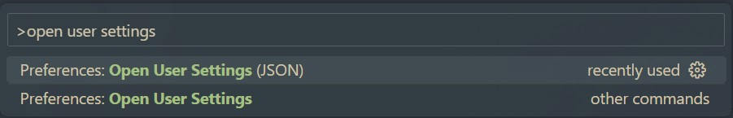
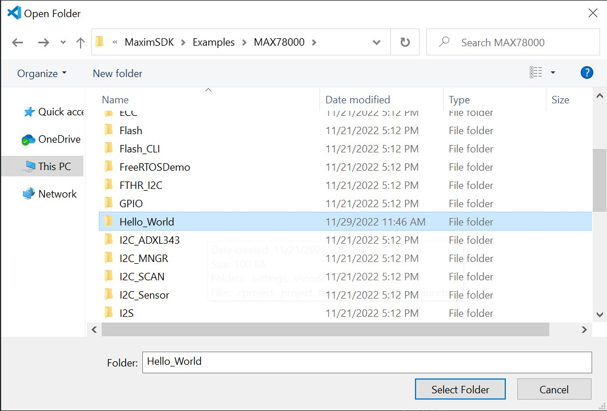
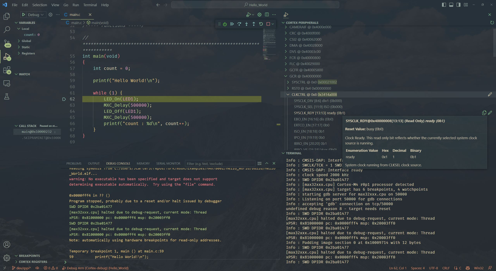
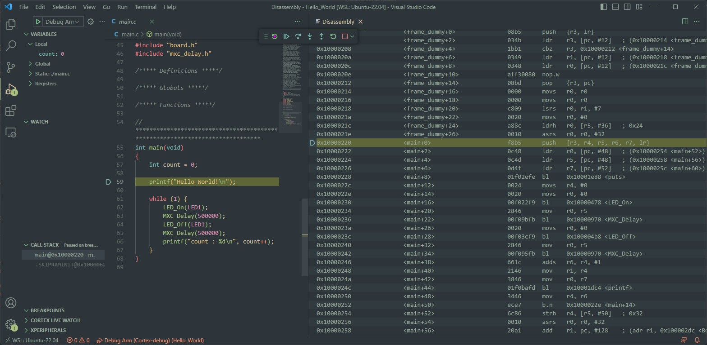
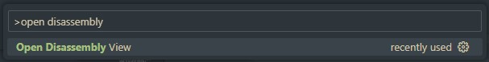

MSDK User Guide
Overview
The Maxim Microcontrollers SDK (MSDK), now a part of Analog Devices, contains the necessary software and tools to develop firmware for the MAX32xxx and MAX78xxx Microcontrollers. That includes register and system startup files to enable low-level development for its supported parts. It also provides higher-level peripheral driver APIs (written in C) alongside various utilities, third-party libraries, Board Support Packages (BSPs), and a set of example programs for each microcontroller.
Additionally, the MSDK includes a GCC-based toolchain, and builds are managed by a system of Makefiles (See GNU Make). A custom fork of OpenOCD enables flashing and debugging. The MSDK's toolchain and build system offers a Command Line Interface (CLI), and project files for supported development environments are maintained that build on top of that CLI.
This document describes the MSDK's installation, setup, and usage.
Supported Operating Systems
-
Windows (Windows 10 only)
-
Linux (Ubuntu only)
-
MacOS
Supported Parts
The MSDK officially supports the following microcontrollers and evaluation platforms.
-
MAX32520: ChipDNA Secure Microcontroller with Secure Boot for IoT Applications
-
MAX32570: Low-Power Arm Cortex-M4 Microcontroller with Contactless Radio for Secure Applications (Available by NDA only)
- MAX32572 (Not Yet Publicly Available)
- MAX32572EVKIT (Not Yet Publicly Available)
-
MAX32650: Ultra-Low-Power Arm Cortex-M4 with FPU-Based Microcontroller (MCU) with 3MB Flash and 1MB SRAM
-
MAX32651: Ultra-Low-Power Arm Cortex-M4 with FPU-Based Microcontroller (MCU) with 3MB Flash and 1MB SRAM
-
MAX32655: Low-Power, Arm Cortex-M4 Processor with FPU-Based Microcontroller and Bluetooth 5.2
-
MAX32660: Tiny, Ultra-Low-Power Arm Cortex-M4 Processor with FPU-Based Microcontroller (MCU) with 256KB Flash and 96KB SRAM
-
MAX32662: Arm Cortex-M4 Processor with FPU-Based Microcontroller (MCU) with 256KB Flash and 80KB SRAM
-
MAX32665-MAX32666 Family: Low-Power Arm Cortex-M4 with FPU-Based Microcontroller with Bluetooth 5 for Wearables
-
MAX32666FTHR2 (Product Page Not Yet Available)
-
MAX32670: High-Reliability, Ultra-Low-Power Microcontroller Powered by Arm Cortex-M4 Processor with FPU for Industrial and IoT
-
MAX32672: High-Reliability, Tiny, Ultra-Low-Power Arm Cortex-M4F Microcontroller with 12-Bit 1MSPS ADC
-
MAX32675: Ultra-Low-Power Arm Cortex-M4F with Precision Analog Front-End for Industrial and Medical Sensors
-
MAX32675FTHR (Product Page Not Yet Available)
-
MAX32680: Ultra-Low-Power Arm Cortex-M4F with Precision Analog Front-End and Bluetooth LE 5.2
-
MAX32690: Arm Cortex-M4 with FPU Microcontroller and Bluetooth LE 5 for Industrial and Wearables
-
MAX78000: Artificial Intelligence Microcontroller with Ultra-Low-Power Convolutional Neural Network Accelerator
-
MAX78002: Artificial Intelligence Microcontroller with Low-Power Convolutional Neural Network Accelerator
Supported Development Environments
- Visual Studio Code
- Eclipse IDE
- IAR Embedded Workbench
- Keil MDK
-
Command-line Development
Supported Languages
- C
- C++
- Assembly (Arm and/or RISC-V instruction set depending on the microcontroller)
Installation
Prerequisites
-
Elevated/Administrator rights
-
⚠️ MacOS
On MacOS, please also download and install Homebrew. It will be used in Completing the Installation on MacOS later on.
-
⚠️ Ubuntu
Several GUI packages are required by the QT installer framework even on headless systems. Run the following command before running the installer to retrieve them.
sudo apt update && sudo apt install libxcb-glx0 libxcb-icccm4 libxcb-image0 libxcb-shm0 libxcb-util1 libxcb-keysyms1 libxcb-randr0 libxcb-render-util0 libxcb-render0 libxcb-shape0 libxcb-sync1 libxcb-xfixes0 libxcb-xinerama0 libxcb-xkb1 libxcb1 libxkbcommon-x11-0 libxkbcommon0 libgl1 libusb-0.1-4 libhidapi-libusb0 libhidapi-hidraw0
Download
The MSDK installer is available for supported Operating Systems from the download links below.
-
-
ℹ️ Note
This file must be made executable before running (chmod +x MaximMicrosSDK_linux.run). Alternatively, set `Allow executing as program" in the Ubuntu GUI.
-
-
-
ℹ️ Note
On MacOS, the installer is distributed inside a .dmg disk image file. Double-click the downloaded file to mount it. Afterward, the installer executable will be made available inside the mounted drive.
-
Setup
The MSDK installer can be run through a GUI Installation or a Command-Line Installation
GUI Installation
-
Download the installer executable to an accessible location and launch it.
-
Click Next to proceed from the Welcome screen.
-
Choose the installation location.

-
Select the components to install. It's recommended to install all components.

-
Continue to the installation page, and click install to begin. Installation can be safely canceled at any time.


-
Click Finish to complete the installation.

-
You should now see the contents of the installation directory populated with the MSDK.

⚠️ Warning
On MacOS, some additional steps are required.
Command-Line Installation
The MSDK installer features a command-line interface that can be used as an alternative to its GUI. This is useful for installations on "headless" systems and scripting.
ℹ️ Note:" The --help Command
The available commands can be retrieved by running the MSDK installer executable with the --help option on the command line. For example:
$ ./MaximMicrosSDK_linux.run --help
Usage: ./MaximMicrosSDK_linux.run [options] command <args> <key=value>
Qt Installer Framework supports both GUI and headless mode. The installation operations can be invoked with the following commands and options. Note that the options marked with "CLI" are available in the headless mode only.
Commands:
in, install - install default or selected packages - <pkg ...>
ch, check-updates - show available updates information on maintenance tool
up, update - update all or selected packages - <pkg ...>
rm, remove - uninstall packages and their child components - <pkg ...>
li, list - list currently installed packages - <regexp>
se, search - search available packages - <regexp>
Note: The --filter-packages option can be used to specify
additional filters for the search operation
co, create-offline - create offline installer from selected packages - <pkg ...>
pr, purge - uninstall all packages and remove entire program directory
Options:
-h, --help Displays help on commandline
options.
# ...
To run a headless installation:
-
Download the installer executable to an accessible location.
-
Ensure that you are able to run the installer with elevated permissions.
Windows
Open a Command Prompt or PowerShell as administrator.
Ubuntu and MacOS
Ensure you have
sudorights. -
Run the installer with the arguments
in --root <install location>Windows
.\MaximMicrosSDK_win.exe in --root C:/MaximSDKUbuntu and MacOS
sudo ./MaximMicrosSDK_linux.run in --root ~/MaximSDK -
Follow the installer's command-line instructions to accept licenses and confirm installation size.
ℹ️ Note: Unattended Installations
You can run the installer without any user input by auto-accepting all licenses, messages, and input.
sudo ./MaximMicrosSDK_linux.run in --root ~/MaximSDK --accept-licenses --accept-messages --confirm-command -
(Ubuntu and MacOS) Change ownership of the installation folder with:
sudo chown -R $(whoami):$(whoami) <MSDK installation folder>ℹ️ Note: Folder Ownership
Usually, running the installation with
sudoresults in an installation owned by therootuser.You can verify this with the
ls -lacommand.ls -la ~/MaximSDK total 29656 drwxr-xr-x 8 root root 4096 Jul 13 20:41 . drwxr-x--- 17 username username 4096 Jul 13 20:41 .. drwxr-xr-x 2 root root 4096 Jul 13 20:41 Documentation drwxr-xr-x 15 root root 4096 Jul 13 20:41 Examples -rw-r--r-- 1 root root 171189 Jul 13 20:41 InstallationLog.txt drwxr-xr-x 17 root root 4096 Jun 28 23:42 Libraries drwxr-xr-x 2 root root 4096 Jul 13 20:41 Licenses -rwxr-xr-x 1 root root 28287992 Jul 13 20:41 MaintenanceTool -rw-r--r-- 1 root root 1719694 Jul 13 20:41 MaintenanceTool.dat -rw-r--r-- 1 root root 9770 Jul 13 20:41 MaintenanceTool.ini drwxr-xr-x 11 root root 4096 Jun 28 23:42 Tools -rw-r--r-- 1 root root 13123 Jun 28 23:48 changelog.txt -rw-r--r-- 1 root root 67664 Jul 13 20:41 components.xml -rw-r--r-- 1 root root 48 Jul 13 20:41 installer.dat drwxr-xr-x 112 root root 12288 Jul 13 20:41 installerResources -rw-r--r-- 1 root root 25214 Jun 29 00:47 maxim.ico -rw-r--r-- 1 root root 362 Jul 13 20:41 network.xml -rwxrwxrwx 1 root root 1129 Jun 29 00:47 setenv.sh -rwxrwxrwx 1 root root 300 Jun 29 00:47 updates.shThe owner of the MSDK installation should be changed back to the normal user with the command above. Otherwise, the toolchain may behave inconsistently against file permission issues.
Once complete,
ls -lashould look similar to below (whereusernameis your username).ls -la ~/MaximSDK total 29656 drwxr-xr-x 8 username username 4096 Jul 13 20:41 . drwxr-x--- 17 username username 4096 Jul 13 20:41 .. drwxr-xr-x 2 username username 4096 Jul 13 20:41 Documentation drwxr-xr-x 15 username username 4096 Jul 13 20:41 Examples -rw-r--r-- 1 username username 171189 Jul 13 20:41 InstallationLog.txt drwxr-xr-x 17 username username 4096 Jun 28 23:42 Libraries drwxr-xr-x 2 username username 4096 Jul 13 20:41 Licenses -rwxr-xr-x 1 username username 28287992 Jul 13 20:41 MaintenanceTool -rw-r--r-- 1 username username 1719694 Jul 13 20:41 MaintenanceTool.dat -rw-r--r-- 1 username username 9770 Jul 13 20:41 MaintenanceTool.ini drwxr-xr-x 11 username username 4096 Jun 28 23:42 Tools -rw-r--r-- 1 username username 13123 Jun 28 23:48 changelog.txt -rw-r--r-- 1 username username 67664 Jul 13 20:41 components.xml -rw-r--r-- 1 username username 48 Jul 13 20:41 installer.dat drwxr-xr-x 112 username username 12288 Jul 13 20:41 installerResources -rw-r--r-- 1 username username 25214 Jun 29 00:47 maxim.ico -rw-r--r-- 1 username username 362 Jul 13 20:41 network.xml -rwxrwxrwx 1 username username 1129 Jun 29 00:47 setenv.sh -rwxrwxrwx 1 username username 300 Jun 29 00:47 updates.sh
Completing the Installation on MacOS
⚠️ Warning
On MacOS, some additional missing packages must be manually installed with Homebrew. There are also some manual setup steps required to retrieve make version 4. The instructions in this section are critical.
-
Install Homebrew.
-
Run the command below to install dependencies for OpenOCD.
brew install libusb-compat libftdi hidapi libusb
Maintenance
An MSDK installation contains a MaintenanceTool executable program in its root directory. Use the Maintenance Tool to retrieve updates, manage components, and uninstall the MSDK.

Updates
The MSDK releases updates quarterly, and the Maintenance Tool will retrieve the latest release when Update components is run.
Older Versions and Offline Installer
Older versions of the MSDK are available as an offline installer for each release tag. They are available on the Releases page of the MSDK GitHub and can be used to roll back to a specific MSDK release.
Development Resources
Users can obtain development copies of the MSDK resources from Github. Setup instructions can be found in the repository's README.
Getting Started
The MSDK is designed for both evaluation and end-application development. The typical evaluation cycle usually involves setting up the development environment, running demos, and exercising the peripheral driver API on an evaluation platform. The typical development cycle typically involves building a prototype application on an evaluation platform first, then porting the application to a custom board. This section describes how to get started with the MSDK focusing on the evaluation cycle.
First, review the Key Concepts below. Then, proceed to the section for your preferred IDE. Each sub-section is written as a self-contained quick-start with links to additional documentation on important topics.
- Getting Started with Visual Studio Code
- Getting Started with Eclipse
- Getting Started with Command-Line Development
Key Concepts
The MSDK supports multiple development environments with different features that may tailor to the user's preferences. There are a few key concepts to remember that are universal to MSDK development.
-
Target Microcontroller: The target microcontroller refers to the base part number of the microcontroller used for development. The MSDK contains register-level support and startup files for each of its supported parts, and it's important to note that support files for a target microcontroller and its Board Support Packages are distinct from each other.
For example, if the MAX78000EVKIT or MAX78000FTHR is being used, the Target Microcontroller is the MAX78000.
-
Board Support Package (BSP): The MSDK supports evaluation platforms for target microcontrollers with Board Support Packages. For microcontrollers with multiple evaluation platforms, multiple BSPs are available. These can be found in the
Libraries/Boardsfolder of the MSDK installation.By default, most projects in the MSDK come pre-configured for the "EVKIT"-type BSP, which is generally the largest evaluation platform for that device with most (or all) pins broken out. It's important to note that the active BSP may need to be reconfigured for a project, which is done slightly differently for each development environment.
- System Environment: Your system's environment is a broad term that encapsulates the programs and variables available to your system's shell on the command line. The user is expected to have some basic familiarity with this concept.
- System Path: Your system's Path is a unique environment variable that tells it where to search for program binaries. The user is expected to be familiar with this concept and how to modify the system Path if necessary.
- Integrated Development Environment (IDE): An IDE offers a higher-level user interface (typically with a GUI) that manages the tools for editing source code, building source code, flashing program binaries, and debugging. The abbreviation is frequently used in this document, and the MSDK supports multiple IDEs that can be used depending on preference. (See "Supported Development Environments")
-
Build Configuration vs. Project Configuration: An MSDK project is comprised of two complementary systems: The Build System and the Integrated Development Environment (IDE). These systems each offer their own configuration interfaces, and it's important to note what each is used for.
The Build System manages source code compilation into program binaries and offers a Command-Line Interface (CLI) for setting Build Configuration Variables.
The IDE offers a higher-level user interface (typically with a GUI) for managing a project and sits on top of the build system's CLI. Each IDE offers its own settings for managing fundamental aspects of the build, such as:
- Setting the Target Microcontroller
- Setting the Board Support Package
- Configuring the Environment and System Path for use with the MSDK toolchain
Getting Started with Visual Studio Code
The MSDK includes Visual Studio Code ("VS Code") support through the VSCode-Maxim project.
This section walks through setup, opening, and running an example project with VS Code. This material is also available in video form targeting the MAX78000 in "Understanding Artificial Intelligence Episode 8.5 - Visual Studio Code".
For complete documentation, see the Visual Studio Code section of this User Guide.
Setup (VS Code)
The setup below only needs to be done once per MSDK installation.
-
Download and install Visual Studio Code for your OS here.
-
Launch Visual Studio Code.
-
Install the Microsoft C/C++ extension.
-
Install the Cortex-Debug extension
-
Use
CTRL + SHIFT + P(orCOMMAND + SHIFT + Pon MacOS) to open the developer prompt. -
Type "open user settings" and select the "Preferences: Open User Settings (JSON)" option.

-
Add the entries below to your user settings.json file.
// There may be other settings up here... "MAXIM_PATH": "Change me! Only use forward slashes (/) for this path", "update.mode": "manual", "extensions.autoUpdate": false, // There may be other settings down here...⚠️ Setting MAXIM_PATH
Set the
MAXIM_PATHoption to the absolute path of the MSDK installation. For example, you might set"MAXIM_PATH":"C:/MaximSDK"on Windows and"MAXIM_PATH":"/home/username/MaximSDK"on Ubuntu/MacOS.ℹ️ Note: Automatic Updates
"update.mode: "manual"and"extensions.autoUpdate": falsedisable automatic updates of VS Code and its extensions, respectively. This is an optional (but recommended) addition left over from the early days of VS Code development when there was lots of feature churn. Things have stabilized more as of version 1.70+, but updates remain frequent. For the VSCode-Maxim project files, the exact version numbers tested with each release can be found on the VSCode-Maxim Releases page. -
Save your changes to the file with
CTRL + Sand restart VS Code.
Building and Running a Project (VS Code)
-
Launch Visual Studio Code.
-
Select File -> Open Folder...

-
Navigate to an example project for the target microcontroller in the MSDK's
Examplesfolder.
⚠️ Copying Examples
It's strongly recommended to copy example projects to an outside folder before modifying them. This keeps the MSDK's "source" copy preserved for reference. Project folders must be copied to a location without any spaces in its filepath.
-
VS Code will prompt for trust the first time. Select Trust folder and enable all features

-
The opened project should look something like this.

-
Set the Board Support Package to match your evaluation platform. In VS Code, this is done by editing the
.vscode/settings.jsonfile and setting the"board"project configuration option.ℹ️ Note
See Board Support Packages for more details and a table of values.

-
Save your changes to
settings.jsonwithCTRL+S. -
Reload the VS Code window. After changing any options in
settings.json, a reload is necessary to force it to re-index VS Code's Intellisense engine.VS Code can be conveniently reloaded with the Reload Window developer command accessed with
CTRL + SHIFT + P(orCOMMAND + SHIFT + Pon MacOS).
-
Press the shortcut
Ctrl+Shift+Bto open the available Build Tasks (alternatively navigate to Terminal -> Run Build task...).
-
Run the "build" task to compile the project for the configured Target Microcontroller and BSP. Notice that the
TARGETandBOARDBuild Configuration Variables are set on the command line. The program binary is successfully compiled into the.elfprogram binary in the build sub-folder of the project.
-
Connect a debug adapter between the host PC and the evaluation platform. Detailed instructions on this hardware setup can be found in the evaluation platform's Datasheet and Quick-Start Guide, which are available on its analog.com product page.
-
Run the
flashbuild task. Running this task will automatically build the project if needed, flash the program binary, and halt the program execution to await a debugger connection.
-
Open the Run and Debug window (
CTRL+SHIFT+D) and launch the debugger (F5).
-
Verify the program counter enters
mainsuccessfully.
-
Press Continue (
F5) to run the program.
Continue | Step Over | Step Into | Step Out | Restart | Stop -
Exercise the debugger and press stop to disconnect when finished.
ℹ️ Note
See Visual Studio Code for additional more detailed documentation.
Getting Started with Eclipse
Setup (Eclipse)
The only setup required to use Eclipse is to ensure that the "Eclipse" component has been selected during the MSDK installation. If the MSDK is already installed, Eclipse can be retrieved using the Maintenance Tool.
This section is an Eclipse "quick-start" that walks through creating, building, and running a project. For complete documentation, see the Eclipse section of this User Guide.
Building and Running a Project (Eclipse)
-
Launch Eclipse with its start menu shortcut.

-
Ensure Eclipse is set to the C/C++ perspective in the top right corner. Otherwise, the new project wizard will not show up.
-
Navigate to File -> New -> Maxim Microcontrollers.

-
Enter the project name and hit Next.

-
Follow the new project wizard.
- Chip type selects the Target Microcontroller
- Board type selects the Board Support Package (BSP)
- Example type selects the example project to be copied as the template for the new project.
- Adapter type selects the debug adapter to use.

-
Select Finish to create the new project.
-
Build the project using the Build hammer button (top left).

-
Select the correct project in the Launch Configuration dropdown and set it to Debug mode.
-
Use the Debug button (top left) to flash the program binary and connect the debugger.

-
The Eclipse view will switch to debug mode, and the debugger will break on entry into
main.
-
Resume the program (
F8) using the top control bar and exercise the debugger.
-
Terminate the debugger (
CTRL+F2) when finished.ℹ️ Note
See Eclipse for additional more detailed documentation.
Getting Started with Command-Line Development
This section demonstrates how to build MSDK example projects on the command line. It also shows how to flash and debug over the command line. The MAX78002EVKIT will be used as an example, but the same concepts apply to all parts.
For more detailed documentation, see the Command-Line Development section of this User Guide.
Setup (Command-Line)
Windows
On Windows, use the MinGW shortcut to launch an MSYS2/MinGW terminal. This shortcut points to Tools/MSYS2/msys.bat in an MSDK installation and correctly configures the user's environment for development.
Linux/MacOS
Sourcing setenv
A setenv.sh script is available in the root directory of an MSDK installation. This file can be sourced to facilitate the setup of an environment for MSDK development.
source ~/MaximSDK/setenv.sh
This command can also be added to shell startup scripts (~/.bashrc, ~/.zshrc, etc.) to automate the environment setup.
ℹ️ Note: Automatic Updates
setenv.sh will automatically check for available updates to the MSDK. This can be permanently disabled by following its prompt on startup, or by deleting/moving the updates.sh script in the root directory of the MSDK installation.

Manual Setup
-
On Linux and MacOS, copy the following contents into your shell's terminal profile/startup script to manually configure your environment for MSDK development. Depending on your system and shell, this could be
~/.profile,~/.zprofile,~/.bashrc,~/.zshrc, etc. Command-line Linux/MacOS users are expected to know which file to edit for their particular system and preferences.# Set MAXIM_PATH to point to the MSDK export MAXIM_PATH=#changeme! # Add Arm Embedded GCC to path (v10.3) export ARM_GCC_ROOT=$MAXIM_PATH/Tools/GNUTools/10.3 export PATH=$ARM_GCC_ROOT/bin:$PATH # Add xPack RISC-V GCC to path (v12.2) export XPACK_GCC_ROOT=$MAXIM_PATH/Tools/xPack/riscv-none-elf-gcc/12.2.0-3.1 export PATH=$XPACK_GCC_ROOT/bin:$PATH # Add OpenOCD to path export OPENOCD_ROOT=$MAXIM_PATH/Tools/OpenOCD export PATH=$OPENOCD_ROOT:$PATH -
Change
export MAXIM_PATH=#changeme!to the installation location of the MSDK. This will make the toolchain accessible from the command line by adding it to your system's path.# Set MAXIM_PATH environment variable export MAXIM_PATH=$HOME/MaximSDK
Verification
Run the following commands to verify that the toolchain is accessible. They should display version numbers successfully.
arm-none-eabi-gcc -varm-none-eabi-gdb -vmake -vopenocd -v
Any "file not found" errors indicate that MAXIM_PATH has not been set correctly or the system's Path has not been configured correctly.
Building and Running an Example (Command-Line)
-
First, copy an example project to an accessible directory outside of the SDK. The
Hello_Worldproject is a good one to start with.⚠️ Copying Examples
It's strongly recommended to copy example projects to an outside folder before modifying them. This keeps the MSDK's "source" copy preserved for reference. Project folders must be copied to a location without any spaces in its filepath.
-
Launch your terminal. On Windows, use the MinGW shortcut or
Tools/MSYS2/msys.batfile to launch the MSYS2 terminal. -
cdinto the location of the copied example project. -
Run the following command to build the example:
makeℹ️ Note: Improving Build Speed
The following command can be used to enable parallel builds and drastically improve build speed:
make -r -j --output-sync=target --no-print-directory-ris an option that ignores some of Make's implicit rules to improve build speed.-
-jenables parallel execution of the build in the maximum number of threads.⚠️ Parallel Builds
Parallel builds can mangle the console output. To deal with this, the
--output-sync=targetoption can be used. However, this is only available in Make version 4 or higher. When this option is used,--no-print-directoryis also used to declutter the build output.
Expected output:
Loaded project.mk CC main.c CC /home/msdk/Libraries/Boards/MAX78002/EvKit_V1/Source/board.c CC /home/msdk/Libraries/Boards/MAX78002/EvKit_V1/../../../MiscDrivers/stdio.c CC /home/msdk/Libraries/Boards/MAX78002/EvKit_V1/../../../MiscDrivers/LED/led.c CC /home/msdk/Libraries/Boards/MAX78002/EvKit_V1/../../../MiscDrivers/PushButton/pb.c CC /home/msdk/Libraries/Boards/MAX78002/EvKit_V1/../../../MiscDrivers/Display/adafruit_3315_tft.c CC /home/msdk/Libraries/Boards/MAX78002/EvKit_V1/../../../MiscDrivers/Touchscreen/adafruit_3315_touch.c CC /home/msdk/Libraries/Boards/MAX78002/EvKit_V1/../../../MiscDrivers/Camera/camera.c CC /home/msdk/Libraries/Boards/MAX78002/EvKit_V1/../../../MiscDrivers/Camera/mipi_camera.c CC /home/msdk/Libraries/Boards/MAX78002/EvKit_V1/../../../MiscDrivers/Camera/ov7692.c CC /home/msdk/Libraries/Boards/MAX78002/EvKit_V1/../../../MiscDrivers/Camera/sccb.c AS /home/msdk/Libraries/CMSIS/Device/Maxim/MAX78002/Source/GCC/startup_max78002.S CC /home/msdk/Libraries/CMSIS/Device/Maxim/MAX78002/Source/heap.c CC /home/msdk/Libraries/CMSIS/Device/Maxim/MAX78002/Source/system_max78002.c LD /home/msdk/Examples/MAX78002/Hello_World/build/max78002.elf arm-none-eabi-size --format=berkeley /home/msdk/Examples/MAX78002/Hello_World/build/max78002.elf text data bss dec hex filename 35708 2504 1156 39368 99c8 /home/msdk/Examples/MAX78002/Hello_World/build/max78002.elf -
Connect a debug adapter between the host PC and the evaluation platform. Detailed instructions on this hardware setup can be found in the evaluation platform's Datasheet and Quick-Start Guide, which are available on its analog.com product page.
-
Flash and run the program with OpenOCD.
make flash.openocdℹ️ Note: Flashing with Make
The command
make flash.openocdis a build target added to the MSDK as of the June 2023 Release to make flashing over the command-line easier. It launches and drives an OpenOCD server behind the scenes to flash the project's binary. See theTools/Flash/flash.mkfile for implementation details, and Flashing on the Command-Line for more details on launching debug server/clients manually.Expected output:
Open On-Chip Debugger 0.11.0+dev-g4cdaa275b (2022-03-02-09:57) Licensed under GNU GPL v2 For bug reports, read http://openocd.org/doc/doxygen/bugs.html DEPRECATED! use 'adapter driver' not 'interface' Info : CMSIS-DAP: SWD supported Info : CMSIS-DAP: Atomic commands supported Info : CMSIS-DAP: Test domain timer supported Info : CMSIS-DAP: FW Version = 0256 Info : CMSIS-DAP: Serial# = 044417016af50c6500000000000000000000000097969906 Info : CMSIS-DAP: Interface Initialised (SWD) Info : SWCLK/TCK = 1 SWDIO/TMS = 1 TDI = 0 TDO = 0 nTRST = 0 nRESET = 1 Info : CMSIS-DAP: Interface ready Info : clock speed 2000 kHz Info : SWD DPIDR 0x2ba01477 Info : max32xxx.cpu: Cortex-M4 r0p1 processor detected Info : max32xxx.cpu: target has 6 breakpoints, 4 watchpoints Info : starting gdb server for max32xxx.cpu on 3333 Info : Listening on port 3333 for gdb connections Info : SWD DPIDR 0x2ba01477 target halted due to debug-request, current mode: Thread xPSR: 0x81000000 pc: 0x0000fff4 msp: 0x20003ff0 ** Programming Started ** ** Programming Finished ** ** Verify Started ** ** Verified OK ** ** Resetting Target ** Info : SWD DPIDR 0x2ba01477 shutdown command invoked -
The program has been flashed and the target micro has been reset. The flashed program should now be running. For the
Hello_Worldexample, an LED on the board should be blinking.ℹ️ Note
See Command-Line Development for additional more detailed documentation.
Visual Studio Code
Support for Visual Studio Code is maintained for the MSDK and developed on the VSCode-Maxim GitHub repository.
For setup/quick-start instructions, see "Getting Started with Visual Studio Code" first. This section offers detailed usage info focusing on the typical development cycle.
Opening Example Projects
Visual Studio Code is built around a "working directory" paradigm. The editor is always rooted in a working directory, and the main mechanism for changing that directory is File -> Open Folder...
As a result, you'll notice that there is no "New Project" mechanism. A "project" in VS Code is simply a folder. It will look inside the opened folder for a .vscode sub-folder to load project-specific settings from.

(Note: You may need to enable viewing of hidden items in your file explorer to see the .vscode sub-folder).
To open a project:
-
Launch Visual Studio Code.
-
Select File -> Open Folder...
-
Navigate to an example project for the target microcontroller in the MSDK's
Examplesfolder.⚠️ Copying Examples
It's strongly recommended to copy example projects to an outside folder before modifying them. This keeps the MSDK's "source" copy preserved for reference. Project folders must be copied to a location without any spaces in its filepath.
-
VS Code will prompt for trust the first time. Select Trust folder and enable all features
-
The opened project should look something like this.
-
Verify the Board Support Package for the project is set correctly.
How to Set the BSP (VS Code)
To set the BSP for an open project:
-
Set the
"board"project configuration option in.vscode/settings.json, which maps to theBOARDBuild Configuration Variable.See Board Support Packages for a table of possible values.
-
Reload the VS Code window to re-index its Intellisense engine.
VS Code can be conveniently reloaded with the Reload Window developer command accessed with
CTRL + SHIFT + P(orCOMMAND + SHIFT + Pon MacOS).
Build Tasks
Once a project is opened 4 available build tasks will become available via Terminal > Run Build task... or the shortcut Ctrl+Shift+B. These tasks are configured by the .vscode/task.json file.

Build
- Compiles the code with a
make allcommand. - Additional options are passed into Make on the command-line based on the project's settings.json file.
- The
./builddirectory will be created and will contain the output binary, as well as all intermediary object files. -
Notice the
TARGET,BOARD, andPROJECTBuild Configuration Variables being set on the command line, and the program binary successfully compiled into the.elfprogram binary in the build sub-folder of the project.
Clean
- Cleans the build output, removing the
./builddirectory and all of its contents.
Clean-Periph
- This task is the same as 'clean', but it also removes the build output for the MSDK's peripheral drivers.
- Use this if you would like to recompile the peripheral drivers from source on the next build.
Flash
- Launching this task automatically runs the
Buildtask first. Then, it flashes the output binary to the microcontroller. - It uses the GDB
loadandcompare-sectionscommands, and handles launching an OpenOCD internally via a pipe connection. - The flashed program will be halted until the microcontroller is reset, power cycled, or a debugger is connected.
- A debugger must be connected correctly to use this task. Refer to the datasheet of your microcontroller's evaluation board for instructions.
Flash & Run
- This is the same as the
Flashtask, but it also will launch execution of the program once flashing is complete.
Erase Flash
- Completely erases all of the application code in the flash memory bank.
- Once complete, the target microcontroller will be effectively "blank".
- This can be useful for recovering from Low-Power (LP) lockouts, bad firmware, etc.
Flashing and Debugging
This section assumes a debugger is connected between the host PC and the evaluation platform. For more detailed instructions on this hardware setup, refer to the evaluation platform's Datasheet and Quick-Start Guide, which are available on its analog.com product page.
Arm Core Debugging
-
Run the
flashbuild task. Running this task will automatically build the project if needed, flash the program binary, and halt the program execution to await a debugger connection.Flashing does not happen automatically when launching the debugger. This is an intentional design choice for VS Code to allow the debugger to quickly restart the program under debug without a lengthy re-flash procedure.
-
Open the Run and Debug window (
CTRL+SHIFT+D) and select theDebug Arm (Cortex-debug)profile.
-
Verify the program counter enters
mainsuccessfully. -
Press Continue (
F5) to run the program. The debugger control bar can be used to exercise the debugger further.Continue | Step Over | Step Into | Step Out | Restart | Stop
Breakpoints
Breakpoints can be set by clicking next to a line number in VS Code's editor. They are removed by clicking on them again.

Additionally conditional breakpoints can be added by right-clicking on a line.

The condition and condition type can be modified with the dropdown. This is useful for setting a breakpoint on a certain value in a for loop iterator or when a specific bit in a register is set, for example.

Peripheral Browsing
A peripheral browser lets you quickly view the formatted register-level contents of the peripheral blocks on a target microcontroller under debug.
As of the v1.6.0 VSCode-Maxim project files, pre-made Cortex-Debug launch profiles are included in each project. These profiles enable peripheral browsing via an embedded "Cortex Peripherals"window.

Alternatively, watch expressions can be used. These can be set for registers and variables. (For example, the sysctrl register below).

- Adding
,blets you print out the value in binary - Adding
,xprints the value in hex. - Standard logical and bitwise operations are supported inside the watch expression.
- Register and variable values can be modified through these same watch-points. (Right click -> Set Value)
It should be noted that the debugger's watch points are contextual, meaning that its symbol look-ups will depend on the active point in your program.
Disassembly View
Stepping through disassembly is supported and enabled by the Cortex-Debug launch profile.

To open the disassembly view:
-
Launch a debug session with the
Debug Arm (Cortex-Debug)profile. -
Open the developer command prompt with
CTRL + SHIFT + P. -
Run the "Open Disassembly View" developer command.

Alternatively, right click -> "Open Disassembly View"

-
The debugger will step through whichever window has the active focus. Set the focus to the disassembly window to step through the assembly code.
See the Cortex-Debug Wiki for more details.
Dual Core Debugging
For microcontrollers with both an Arm M4 and a RISC-V core, the GDB (RISC-V) launch profile is provided to enable RISC-V debugging.
ℹ️ Note
The RISC-V core requires setup and handoff from the Arm M4 core. As a result, this is an advanced configuration requiring a unique combination of the project's source code, Makefiles, and VSCode-Maxim project settings. Such projects are appended with the -riscv suffix in the project's folder name.
This section demonstrates how to debug -riscv projects in VS Code using the mnist-riscv project for the MAX78000 as an example.
-
Connect both your Arm (SWD) and RISC-V (JTAG) debuggers. VSCode-Maxim projects come pre-configured to use the ARM-USB-OCD-H + ARM-JTAG-20-10 adapters for the RISC-V JTAG port. Ex:

⚠️ Olimex Drivers
If connection issues occur with the Olimex adapter, verify that the drivers are installed correctly. See Section 3.3.3 of the Olimex User Manual. The Zadig tool to install WinUSB drivers.
-
Open the project in VS Code.
-
Run the "Flash" task.

-
Launch the debugger using the Debug Arm (Cortex-Debug) or GDB (Arm M4) profile first:
... which should hit the breakpoint in
main.c...
-
Continue the debugger. The code in
main.cwill boot up the RISC-V core. You can optionally set a breakpoint onWakeISRto see when the RISC-V core has signaled it's ready.
-
Now, switch the debugger profile to the GDB (RISC-V) profile and launch it. This will launch an additional instance on a separate port and connect to the Olimex adapter.

ℹ️ Note: Signal 0 Exception
The "Signal 0" exception below is a known issue caused by a signaling mismatch between the RISC-V core and VS Code's debugger engine. The exception message is harmless and can be safely ignored.

-
From here, the debugger should be fully functional. The Arm vs. RISC-V debugger instance can be selected with the dropdown on the debugger control bar.

Project Settings
.vscode/settings.json is the main project configuration file. Values set here are parsed into the other .json config files.
When a change is made to this file, VS Code should be reloaded with CTRL+SHIFT+P -> Reload Window (or alternatively restarted completely) to force a re-parse.

The default project configuration should work for most use cases as long as "target" and "board" are set correctly.
ℹ️ Note
Any field from settings.json can be referenced from any other VS Code config file (including itself) with "${config:[fieldname]}"
The following configuration options are available:
"MAXIM_PATH"
- This option must point to the root installation directory of the MSDK.
- It should be placed in the global user settings.json file during first-time VSCode-Maxim setup. See Getting Started with Visual Studio Code.
"target"
- This sets the target microcontroller for the project.
- It sets the
TARGETBuild Configuration variable.
"board"
- This sets the target board for the project (ie. Evaluation Kit, Feather board, etc.)
- See How to Set the BSP (VS Code)
"terminal.integrated.env.[platform]:Path"
- This prepends the location of the MSDK toolchain binaries to the system
Pathused by VSCode's integrated terminal. - The Path is not sanitized by default, which means that the terminal inherits the system path.
"project_name"
- Sets the name of project. This is used in other config options such as
program_file. - Default value:
"${workspaceFolderBasename}"
"program_file"
- Sets the name of the file to flash and debug. This is provided in case it's needed, but for most use cases should be left at its default.
- File extension must be included.
- Default value:
"${config:project_name}.elf"
"symbol_file"
- Sets the name of the file that GDB will load debug symbols from.
- File extension must be included.
- Default value:
"${config:program_file}"
"M4_OCD_interface_file"
- Sets the OpenOCD interface file to use to connect to the Arm M4 core. This should match the debugger being used for the M4 core.
- The
MaximSDK/Tools/OpenOCD/scripts/interfacefolder is searched for the file specified by this setting. .cfgfile extension must be included.- Default value:
"cmsis-dap.cfg"
"M4_OCD_target_file"
- Sets the OpenOCD target file to use for the Arm M4 core. This should match the target microcontroller.
.cfgfile extension must be included.- The
MaximSDK/Tools/OpenOCD/scripts/targetfolder is searched for the file specified by this setting. - Default value:
"${config:target}.cfg"
"RV_OCD_interface_file"
- Sets the OpenOCD interface file to use to connect to the RISC-V core. This should match the debugger being used for the RISC-V core.
- The
MaximSDK/Tools/OpenOCD/scripts/interfacefolder is searched for the file specified by this setting. .cfgfile extension must be included.- Default value:
"ftdi/olimex-arm-usb-ocd-h.cfg"
"RV_OCD_target_file"
- Sets the OpenOCD target file to use for the RISC-V core.
- The
MaximSDK/Tools/OpenOCD/scripts/targetfolder is searched for the file specified by this setting. .cfgfile extension must be included.- Default value:
"${config:target}_riscv.cfg"
"v_Arm_GCC"
- Sets the version of the Arm Embedded GCC to use, including toolchain binaries and the standard library version.
- This gets parsed into
ARM_GCC_path. - Default value:
"10.3"
"v_xPack_GCC"
- Sets the version of the xPack RISC-V GCC to use.
- This gets parsed into
xPack_GCC_path. - Default value:
"12.2.0-3.1"
"OCD_path"
- Where to find the OpenOCD.
- Default value:
"${config:MAXIM_PATH}/Tools/OpenOCD"
"ARM_GCC_path"
- Where to find the Arm Embedded GCC Toolchain.
- Default value:
"${config:MAXIM_PATH}/Tools/GNUTools/${config:v_Arm_GCC}"
"xPack_GCC_path"
- Where to find the RISC-V GCC Toolchain.
- Default value:
"${config:MAXIM_PATH}/Tools/xPack/riscv-none-elf-gcc/${config:v_xPack_GCC}"
"Make_path"
- Where to find Make binaries (only used on Windows)
- Default value:
"${config:MAXIM_PATH}/Tools/MSYS2/usr/bin"
"C_Cpp.default.includePath"
- Which paths to search to find header (.h) files.
- Does not recursively search by default. To recursively search, use
/**.
"C_Cpp.default.browse.path"
- Which paths to search to find source (.c) files.
- Does not recursively search by default. To recursively search, use
/**.
"C_Cpp.default.defines"
- Sets the compiler definitions to use for the intellisense engine.
- Most definitions should be defined in header files, but if a definition is missing it can be entered here to get the intellisense engine to recognize it.
Setting Search Paths for Intellisense
VS Code's intellisense engine must be told where to find the header files for your source code. By default, the MSDK's peripheral drivers, the C standard libraries, and all of the sub-directories of the workspace will be searched for header files to use with Intellisense. If VS Code throws an error on an #include statement (and the file exists), then a search path is most likely missing.
To add additional search paths :
-
Open the
.vscode/settings.jsonfile. -
Add the include path(s) to the
C_Cpp.default.includePathlist. The paths set here should contain header files, and will be searched by the Intellisense engine and when using "Go to Declaration" in the editor. -
Add the path(s) to any relevant implementation files to the
C_Cpp.default.browse.pathlist. This list contains the paths that will be searched when using "Go to Definition".
Project Creation
Option 1. Copying a Pre-Made Project
Copying a pre-made example project is a great way to get rolling quickly, and is currently the recommended method for creating new projects.
The release package for this project (Located at Tools/VSCode-Maxim in the MSDK) contains a New_Project folder designed for such purposes. Additionally, any of the VS Code-enabled Example projects can be copied from the MSDK.
-
Copy the existing project folder to an accessible location. This will be the location of your new project.
⚠️ Warning
The full path to the project must not have any spaces in it.
-
(Optional) Rename the folder. For example, I might rename the folder to
MyProject. -
Open the project in VS Code (
File -> Open Folder...) -
CTRL+SHIFT+P -> Reload Windowto re-parse the project settings. -
That's it! The existing project is ready to build, debug, and modify.
Option 2 - Injecting
VSCode-Maxim releases provide the Inject folder for "injecting" into an existing folder. If you want to start from scratch or use the project files with existing source code, take this option.
-
Create your project folder if necessary. For example, I might create a new project in a workspace folder with the path:
C:/Users/Jake.Carter/workspace/MyNewProject. -
Copy the contents of the
Injectfolder into the project folder from step 1. The contents to copy include a.vscodefolder, aMakefile, and aproject.mkfile. For this example, the contents of the 'MyProject' folder would be the following:C:/Users/Jake.Carter/workspace/MyNewProject |- .vscode |- Makefile |- project.mk -
Open the project in VS Code (
File -> Open Folder...) -
CTRL+SHIFT+P -> Reload Windowto re-parse the project settings. -
Configure the build system for use with any pre-existing source code.
-
That's it! Your new project can now be opened with
File > Open Folderfrom within VS Code.
Eclipse
For setup/quick-start instructions, see "Getting Started with Eclipse" first. This section offers detailed usage info focusing on the typical development cycle.
Running Eclipse
Eclipse must be launched with the Eclipse MaximSDK shortcut. The shortcut points to the Tools/Eclipse/cdt/eclipse(.bat/.sh) file, which configures Eclipse's system environment for use with the MSDK toolchain.
When Eclipse is launched, it will prompt for a workspace location. This is a local folder that Eclipse will copy its projects into.

Creating a New Project
-
Launch Eclipse.
-
Ensure that the Eclipse is set to the C/C++ perspective in the top right corner. Otherwise, the new project wizard will not show up.
-
Navigate to File -> New -> Maxim Microcontrollers.
-
Enter the project name and hit Next.
-
Follow the new project wizard.
- Chip type selects the Target Microcontroller
- Board type selects the Board Support Package (BSP)
- Example type selects the example project to be copied as the template for the new project.
- Adapter type selects the debug adapter to use.
-
Select Finish to create the new project.
Importing Examples
-
Launch Eclipse.
-
Use File -> Import to open the import wizard.
-
Select General -> Existing Projects into Workspace and hit Next.

-
Browse to the
Examplesfolder in the MSDK installation for your target microcontroller and select the example projects to import into the workspace.
-
Ensure that Copy projects into workspace is selected. This will copy the projects out of the MSDK and leave the originals unmodified.
-
Select Finish to import the project(s).
-
The projects should now show up in the Project Explorer.

How to Set the BSP (Eclipse)
Imported Eclipse projects files are configured for the EVKIT-type BSP by default. To set the BSP:
- Right click the project name and select Properties. Navigate to C/C++ Build -> Environment.
-
Set the
BOARDBuild Configuration Variable to match the target evaluation platform.See Board Support Packages for a table of possible values.

-
clean and rebuild the project.
Building a Project
-
Ensure that the Eclipse is set to the C/C++ perspective (top right).
-
Select the correct project in the Launch Configuration dropdown.
-
Use the Build hammer button (top left) to build the project.
Flashing and Debugging
-
Connect a debug adapter between the host PC and the evaluation platform. For more detailed instructions on this hardware setup, refer to the evaluation platform's Datasheet and Quick-Start Guide, which are available on its analog.com product page.
-
Ensure the correct project in the Launch Configuration dropdown is selected in Debug mode.
-
Use the Debug button (top left) to flash the program binary and connect the debugger.
-
The Eclipse view will switch to debug mode, and the debugger will break on entry into the main.
-
Resume the program (
F8) using the top control bar and exercise the debugger. -
Terminate the debugger (
CTRL+F2) when finished.
Segger J-Link Setup Guide (Eclipse)
Eclipse offers built-in support for Segger J-Link debuggers. J-Link debugging can be enabled following the steps below:
-
Download and install the latest Segger J-Link Software and Documentation from here
-
Follow the instructions from the Segger J-Link Eclipse plugin here with the following modifications specific to the MSDK. Other options an be left at their defaults.
-
Modify the Executable name under "GDB Client Setup" to
arm-none-eabi-gdb${cross_suffix}
-
Modify the "Startup" options to issue a
monitor reset haltunder initialization commands and uncheckPre-run/Restart reset
-
Keil MDK
The Keil MDK Microcontroller Development Kit is developed and maintained by Arm. ADI maintains CMSIS Pack files supporting this environment.
Supporting documentation is maintained by Arm, and can be found on the MDK5 page. The latest pack files can be found under the "Maxim" section of the device list.
IAR Embedded Workbench
IAR Embedded Workbench is a third-party IDE that requires a software license. ADI maintains support files for this IDE in the form of CMSIS Pack files.
Supporting documentation is maintained by IAR, and can be found on the Embedded Workbench Product Page under "User Guides and documentation".
Command-Line Development
This section offers more detailed info on command-line development.
For setup/quick-start, see "Getting Started with Command-Line Development".
How to Set the BSP (Command-Line)
-
To persistently the BSP, set the
BOARDBuild Configuration Variable by editing the project.mk that can be found inside each project.# This file can be used to set build configuration # variables. These variables are defined in a file called # "Makefile" that is located next to this one. # For instructions on how to use this system, see # https://analogdevicesinc.github.io/msdk/USERGUIDE/ # ********************************************************** # Add your config here! BOARD=FTHR_RevA # Set the BSP for the MAX78000FTHR -
Alternatively, set
BOARDon the command line when building (i.e.,make -r -j BOARD=FTHR_RevA) to set/override the BSP for a single build.
Building on the Command-Line
-
cdinto the project folder. -
Run
make -
Parallel Build (fastest build, but console message formatting may be mangled):
make -r -j -
Serial Build
make -r -
Take note of the output filename and location, which by default is the lowercase name of the Target microcontroller and created in the
buildfolder.
Cleaning on the Command-Line
cdinto the project folder.- Run
make clean - Project clean:
make cleandeletes the projectbuildfolder and all of its contents. - Library clean:
make distcleancan be used to clean out all build products, including the projectbuildfolder and all peripheral driver libraries.
Flashing on the Command-Line
ℹ️ A Note on Flashing
The commands below are not a comprehensive list of all the possible options for flashing. They are the most common and useful ones. For full documentation, see the "Flash Programming" section of the OpenOCD User Manual
-
Build the project.
-
Connect a debug adapter between the host PC and the evaluation platform. For more detailed instructions on this hardware setup, refer to the evaluation platform's Datasheet and Quick-Start Guide, which are available on its analog.com product page.
-
Flash the program using
openocd. It's recommended to use themakecommand below for convenience.-
ℹ️ Flashing with Make
make flash.openocdExpected output:
Open On-Chip Debugger 0.11.0+dev-g4cdaa275b (2022-03-02-09:57) Licensed under GNU GPL v2 For bug reports, read http://openocd.org/doc/doxygen/bugs.html DEPRECATED! use 'adapter driver' not 'interface' Info : CMSIS-DAP: SWD supported Info : CMSIS-DAP: Atomic commands supported Info : CMSIS-DAP: Test domain timer supported Info : CMSIS-DAP: FW Version = 0256 Info : CMSIS-DAP: Serial# = 044417016af50c6500000000000000000000000097969906 Info : CMSIS-DAP: Interface Initialised (SWD) Info : SWCLK/TCK = 1 SWDIO/TMS = 1 TDI = 0 TDO = 0 nTRST = 0 nRESET = 1 Info : CMSIS-DAP: Interface ready Info : clock speed 2000 kHz Info : SWD DPIDR 0x2ba01477 Info : max32xxx.cpu: Cortex-M4 r0p1 processor detected Info : max32xxx.cpu: target has 6 breakpoints, 4 watchpoints Info : starting gdb server for max32xxx.cpu on 3333 Info : Listening on port 3333 for gdb connections Info : SWD DPIDR 0x2ba01477 target halted due to debug-request, current mode: Thread xPSR: 0x81000000 pc: 0x0000fff4 msp: 0x20003ff0 ** Programming Started ** ** Programming Finished ** ** Verify Started ** ** Verified OK ** ** Resetting Target ** Info : SWD DPIDR 0x2ba01477 shutdown command invokedThis command is a build target added to the MSDK as of the June 2023 Release to make flashing over the command-line easier. It will flash and run the project with OpenOCD. See the
Tools/Flash/flash.mkfile for implementation details. -
ℹ️ OpenOCD Flash & Hold
The following command template can be used if you just want to flash the program with OpenOCD manually, and halt the target micro. This is used when you want to start a command-line debugging session.
openocd -s $MAXIM_PATH/Tools/OpenOCD/scripts -f interface/cmsis-dap.cfg -f target/<target>.cfg -c "program build/<filename>.elf verify; init; reset halt"-
ℹ️
This option tells OpenOCD to search the-s $MAXIM_PATH/Tools/OpenOCD/scriptsTools/OpenOCD/scriptsfolder of the MSDK installation for files.⚠️ Warning: Windows
On Windows you should use%MAXIM_PATH%(Command Prompt) or$env:MAXIM_PATH(PowerShell) to dereference theMAXIM_PATHenvironment variable -
ℹ️
-f target/<target>.cfgThis option loads an OpenOCD config file for the target microcontroller. Supported options can be found in the
Tools/OpenOCD/scripts/targetfolder.⚠️Change
<target>to match the target micro -
ℹ️
-f interface/cmsis-dap.cfgThis option loads an OpenOCD config file for the MAX32625PICO SWD debugger that is included with most EVKITs. You may need to change this option for other debuggers. Supported options can be found in the
Tools/OpenOCD/scripts/interfacefolder. -
-c "program build/<filename>.elf verify; init; reset halt"This command flashes the program binary (
program), performs a flash verification (verify), initializes the connection to the target micro (init), and finally resets/halts the micro to prepare for debug (reset halt).
Expected output:
Open On-Chip Debugger 0.11.0+dev-g4cdaa275b (2022-03-02-09:57) Licensed under GNU GPL v2 For bug reports, read http://openocd.org/doc/doxygen/bugs.html DEPRECATED! use 'adapter driver' not 'interface' Info : CMSIS-DAP: SWD supported Info : CMSIS-DAP: Atomic commands supported Info : CMSIS-DAP: Test domain timer supported Info : CMSIS-DAP: FW Version = 0256 Info : CMSIS-DAP: Serial# = 044417016af50c6500000000000000000000000097969906 Info : CMSIS-DAP: Interface Initialised (SWD) Info : SWCLK/TCK = 1 SWDIO/TMS = 1 TDI = 0 TDO = 0 nTRST = 0 nRESET = 1 Info : CMSIS-DAP: Interface ready Info : clock speed 2000 kHz Info : SWD DPIDR 0x2ba01477 Info : max32xxx.cpu: Cortex-M4 r0p1 processor detected Info : max32xxx.cpu: target has 6 breakpoints, 4 watchpoints Info : starting gdb server for max32xxx.cpu on 3333 Info : Listening on port 3333 for gdb connections Info : SWD DPIDR 0x2ba01477 target halted due to debug-request, current mode: Thread xPSR: 0x81000000 pc: 0x0000fff4 msp: 0x20003ff0 ** Programming Started ** ** Programming Finished ** ** Verify Started ** ** Verified OK ** Info : Listening on port 6666 for tcl connections Info : Listening on port 4444 for telnet connections # Note: OpenOCD is now waiting for a GDB client connection -
-
Debugging on the Command-Line
-
Flash the program using the Flash and Hold command above.
-
Launch an new separate terminal.
⚠️ On Windows, use the MinGW shortcut or
Tools/MSYS2/msys.batfile to launch the MSYS2 terminal. -
cdinto the location of the copied example project. -
Run the following command to launch a GDB client.
arm-none-eabi-gdb --se=build/<filename>.elf-
ℹ️
This sets the symbol and executable file to the compiled program file.--se=build/<filename>.elf⚠️ Change this to match the build output filename.
Expected output:
GNU gdb (GNU Arm Embedded Toolchain 10.3-2021.10) 10.2.90.20210621-git Copyright (C) 2021 Free Software Foundation, Inc. License GPLv3+: GNU GPL version 3 or later <http://gnu.org/licenses/gpl.html> This is free software: you are free to change and redistribute it. There is NO WARRANTY, to the extent permitted by law. Type "show copying" and "show warranty" for details. This GDB was configured as "--host=i686-w64-mingw32 --target=arm-none-eabi". Type "show configuration" for configuration details. For bug reporting instructions, please see: <https://www.gnu.org/software/gdb/bugs/>. Find the GDB manual and other documentation resources online at: <http://www.gnu.org/software/gdb/documentation/>. For help, type "help". Type "apropos word" to search for commands related to "word"... Reading symbols from build/max78002.elf... (gdb)ℹ️ Note
The terminal is now in an interactive GDB client window. It accepts GDB commands. Run
helpat any time, or see Common GDB Commands in this document. -
-
Connect the GDB Client to the OpenOCD server with the following command.
target extended-remote localhost:3333Expected output:
Remote debugging using localhost:3333 0x0000fff4 in ?? () # Note: ?? may be present at this stage, which is OK. -
Reset the target microcontroller.
monitor reset haltExpected output:
SWD DPIDR 0x2ba01477 target halted due to debug-request, current mode: Thread xPSR: 0x81000000 pc: 0x0000fff4 msp: 0x20003ff0 -
Set a breakpoint on
main.b mainExpected output:
Breakpoint 1 at 0x10000224: file main.c, line 62. Note: automatically using hardware breakpoints for read-only addresses. -
Continue the debugger.
continueExpected output (for the Hello World example):
Continuing. Breakpoint 1, main () at main.c:62 62 printf("Hello World!\n"); -
(Optional) Continue exercising the debugger.
-
Quit GDB.
quitExpected output:
A debugging session is active. Inferior 1 [Remote target] will be detached. Quit anyway? (y or n) [answered Y; input not from terminal] Detaching from program: C:\Users\User\codespace\Hello_World\build\max78002.elf, Remote target [Inferior 1 (Remote target) detached] -
Quit OpenOCD. In the terminal window running the OpenOCD server, press
CTRL + Cto issue the shutdown command.
Common GDB Commands
| Command | Short Command | Description |
|---|---|---|
monitor halt |
Halt the microcontroller. | |
monitor reset halt |
Reset the microcontroller and immediately halt. | |
monitor max32xxx mass_erase 0 |
Mass erase flash bank 0. | |
file <filename> |
Set the program file to <filename> |
|
load |
Flash the current program file | |
continue |
c |
Continue execution. |
break <arg> |
b <arg> |
Set a breakpoint. <arg> can be a function name, file:line_number, or address. |
print <variable> |
p |
Print the value of a variable. The variable must be in the current scope. |
backtrace |
bt |
Print contents of the stack frame. |
step |
s |
Execute the next instruction. |
next |
n |
Execute the next line of code. |
finish |
f |
Continue to the end of the current function. |
info reg |
Print the values of the ARM registers. | |
help |
Print descriptions for available commands | |
help <cmd> |
Print description for given command. | |
quit |
q |
Quit the GDB client |
Build System
Build System Overview
The Build System manages the compilation of source code into program binaries and offers a Command-Line Interface (CLI) for setting Build Configuration Variables. All IDEs interface with this system.
The Build System is managed by two files found in a project's root directory, one called Makefile and one called project.mk. These files are used by the GNU Make program (which is a part of the MSDK toolchain) to locate and build a project's source code.
- Makefile is the "core" file and should not be edited directly. Instead, it exposes the CLI that can be accessed in the project.mk file, on the command line, in your system's environment, or through your IDE. It also comes with a default configuration that is suitable for most projects.
- project.mk offers a convenient and stable access point for advanced build configuration, and this is the file that should be edited if necessary.
When the command
make
is run from inside of a project folder, the program make will resolve any project-specific settings and then build the project's source code.
Default Build Behavior
By default, the build system will auto-search the root project directory for source code (*.c) and header files (*.h) to compile into a program binary. The optional include and src directories are also searched if they exist.
Root Project Directory
├─ project.mk
├─ Makefile
├─ *.h
├─ *.c
├─include # <-- Optional
└─ *.h
├─src # <-- Optional
└─ *.c
Additionally, a project's build system will come pre-configured for a specific Target Microcontroller and its primary BSP.
The default configuration is suitable for most use cases, but a system of Build Configuration Variables is available if additional configuration is needed.
Build Configuration Variables
A Build Configuration Variable is a Makefile variable and therefore follows the same rules. However, they have been streamlined to be made much easier to use, so most of the official GNU Make documentation is only needed for advanced use cases.
How to Set a Build Configuration Variable
To set a standard configuration variable, use the = syntax...
VARIABLE=VALUE
The = operator is used for most configuration variables with a few exceptions (documented in the reference table) when a variable should contain a list of values. In such cases, use += the syntax to add values to the list.
VARIABLE+=VALUE1
VARIABLE+=VALUE2
Where to Set a Build Configuration Variable
For most variables, you should set them in the project.mk file (exceptions are documented in the reference table and IDE-specific sections).
For example, to enable hardware floating-point acceleration for a project, the MFLOAT_ABI configuration variable can be used with a value of hard. The contents of project.mk might then look as follows:
(Inside project.mk)
# This file can be used to set build configuration
# variables. These variables are defined in a file called
# "Makefile" that is located next to this one.
# For instructions on how to use this system, see
# https://analogdevicesinc.github.io/msdk/USERGUIDE/
# **********************************************************
MFLOAT_ABI=hard # Enable hardware floating point acceleration
It should also be noted that configuration variables can be set on the command line as well. For example
make MFLOAT_ABI=hard
will have the same effect.
Additionally, environment variables can be used. For example (on Linux)
export MFLOAT_ABI=hard
will set the hardware floating point acceleration as the default for all projects with an environment variable.
However, there is a precedence hierarchy that should be taken into consideration.
Precedence Hierarchy
The precedence hierarchy for the value of a configuration variable is:
- IDE/command-line > project.mk > environment variable > default value
If a value is set in an IDE and project.mk, the IDE's value will take precedence. However, the "override" directive can be used in project.mk to give it max precedence.
Build Tables
The following sections present the available Build Configuration Variables.
Primary Build Variables
| Configuration Variable | Description | Details |
|---|---|---|
MAXIM_PATH |
(Optional) Specify the location of the MSDK | This optional variable can be used to change where the Makefile looks for the MSDK installation. By default, the build system will attempt to locate the MSDK with a relative path. If a project is moved outside of the SDK, this variable must be set to the absolute path of the MSDK installation. |
TARGET |
Set the Target Microcontroller | If you are using an IDE, set this variable in the IDE's settings instead of project.mk |
BOARD |
Set the Board Support Package (BSP) | If you are using an IDE, set this variable in the IDE's settings instead of project.mk. See Board Support Packages for more details. When you change this option, it's usually a good idea to fully clean your project, then rebuild. |
BSP_SEARCH_DIR |
Set the directory to search for the Board Support Package (BSP) | By default, the Libraries/Boards folder of the MSDK is searched for the TARGET microcontroller. This setting is useful for loading custom BSPs from outside of the MSDK. When LIB_BOARD=1, the build system looks for the file path at $(BSP_SEARCH_DIR)/$(BOARD)/board.mk.See BSP Search Directory for more details. |
Project Build Variables
The following variables deal with fundamental project tasks such as adding source code, include paths, changing the output filename, etc.
| Configuration Variable | Description | Details |
|---|---|---|
VPATH |
Where to search for source (.c/.cpp) files | Use the += operator with this variable. This controls where the Makefile will look for source code files. If AUTOSEARCH is enabled (which it is by default), all source code files in the directories specified by this option will be automatically added to the build. If AUTOSEARCH is disabled, this tells the Makefile where to look for the files specified by SRCS. |
IPATH |
Where to search for header (.h) files | Use the += operator with this variable. This controls where the Makefile will look for header files. Unlike the VPATH option, this is not related to AUTOSEARCH. Individual header files are not ever manually added to the build. Instead, you only need to specify the location of your header files. |
SRCS |
List of source (.c/.cpp) files to add to the build | Use the += operator with this variable. All of the files in this list will be added to the build. If AUTOSEARCH is enabled, this is most useful for adding the full absolute path to a singular source file to selectively add to the build. If AUTOSEARCH is disabled, all of the source files for the project must be added to SRCS, and they must also all be located on an entry in VPATH. Otherwise, a full path relative to the Makefile must be used. |
AUTOSEARCH |
Automatically search for source (.c/.cpp) files | Enable or disable the automatic detection of .c files on VPATH (enabled by default). Set to 0 to disable or 1 to enable. If auto-search is disabled, source files must be manually added to SRCS. |
PROJECT |
Set the output filename | This controls the output filename of the build. File extensions should not be included in the filename. For VS Code, you should use the project_name advanced config option instead of project.mk. |
PROJ_LIBS |
Add a static library file (.a) to the project | Use the += operator with this variable. Additional static libraries to link against can be added with this option.It should be noted that static library files are named with the lib<libraryname>.a convention. Only add <libraryname> to this variable.Ex: Give a file called libEXAMPLE.a, write PROJ_LIBS += EXAMPLEAdditionally, ensure that the location of the library is added to PROJ_LDFLAGS.Ex: PROJ_LDFLAGS += -Lsome/library/search/directory |
Build Variables for the Compiler
The following variables can be used to interface with the compiler to perform common tasks such as changing the optimization level, adding compiler definitions to the build, and changing floating point acceleration.
| Configuration Variable | Description | Details |
|---|---|---|
MXC_OPTIMIZE_CFLAGS |
Set the optimization level | See Optimize Options for more details. Normal builds will default to -Og, which is good for debugging, while release builds will default to -O2. |
PROJ_CFLAGS |
Add compiler flags to the build | Use the += operator with this variable. Compiler flags can be added with this option, including compiler definitions. For each value, the same syntax should be used as if the compiler flag was passed in over the command line. These can include standard GCC options and/or ARM-specific options. |
PROJ_AFLAGS |
Add assemblers flag to the build | Use the += operator with this variable. Assembler flags can be added with this option. |
PROJ_OBJS |
Add object files to the build | Use the += operator with this variable. If needed, object files (.o) can be added to the build with this option. |
DEBUG |
Toggle extra debug information | Set this to 1 to enable extra debug information at compile time. This generally improves the reliability of debugging at some increase in code size. Set to 0 to disable. |
Build Variables for the Linker
| Configuration Variable | Description | Details |
|---|---|---|
LINKERFILE |
Set the linkerfile to use | A linkerfile is responsible for specifying the available memory banks, their layout, and the organization of program binaries memory. The file should exist in Libraries/CMSIS/Device/Maxim/TARGET/Source/GCC in the MSDK, or it should be placed inside the root directory of the project. |
PROJ_LDFLAGS |
Add a linker flag to the build | Use the += operator with this variable. Flags can be passed to the linker with this option. See GCC Options for Linking |
Build Variables for Arm Cortex-M4 Cores
The following build variables are used to control options specific to the Arm Cortex-M4 core available. They are available on all microcontrollers, and for all projects unless that project is built for a RISC-V core.
| Configuration Variable | Description | Details |
|---|---|---|
MFLOAT_ABI |
Set the floating point acceleration level | Sets the floating-point acceleration level. Permitted values are hard, soft, and softfp (default). To enable full hardware acceleration instructions, use hard, but keep in mind that all libraries your source code uses must also be compiled with hard. If there is any conflict, you'll get a linker error. For more details, see -mfloat-abi under ARM Options. |
DEFAULT_OPTIMIZE_FLAGS |
Override the default extra optimization flags | Extra compiler optimization flags are added to the build. They are defined in Libraries/CMSIS/Device/Maxim/GCC/gcc.mk. These can be disabled entirely by setting this variable to empty (DEFAULT_OPTIMIZE_FLAGS=). |
DEFAULT_WARNING_FLAGS |
Override the default warning flags | Default flags controlling warning output are added in Libraries/CMSIS/Device/Maxim/GCC/gcc.mk. These can be disabled entirely by setting this variable to empty (DEFAULT_OPTIMIZE_FLAGS=). |
Build Variables for RISC-V Cores
The following build variables are used for RISC-V development. They are only available on microcontrollers with RISC-V cores.
| Configuration Variable | Description | Details |
|---|---|---|
RISCV_CORE |
Build a project for the RISC-V core | Set to 1 to convert an entire project to use the RISC-V toolchain. Only available on microcontrollers with a RISC-V core. |
RISCV_LOAD |
Compile and load project for the RISC-V core | Only available on the MAX32655, MAX32680, and MAX32690. Set to 1 compile the project specified by RISCV_APP for the RISC-V core and link it into the same binary as the current project. Useful for dual-core projects. |
RISCV_APP |
Project folder to compile for the RISCV_LOAD option |
Only available on the MAX32655, MAX32680, and MAX32690. This option specifies the project to build for the RISC-V core when RISCV_LOAD is enabled. Must be a path relative to the project that enables RISCV_LOAD, or an absolute path. |
RISCV_PREFIX |
Change the toolchain prefix | This option can be used to override the GCC toolchain prefix if needed. For example, to use the legacy RISC-V toolchain RISCV_PREFIX = riscv-none-embed will attempt to compile with riscv-none-embed-gcc. |
Build Variables for Toggling Libraries
The following variables can be used to enable the available libraries in the MSDK. Each library may also offer its own build configuration variables when enabled, which are documented in the libraries section.
| Configuration Variable | Description | Details |
|---|---|---|
LIB_BOARD |
Include the BSP library (enabled by default) | Inclusion of the Board-Support Package (BSP) library, which is enabled by default, can be toggled with this variable. Set to 0 to disable or 1 to enable. |
LIB_PERIPHDRIVERS |
Include the peripheral driver library (enabled by default) | The peripheral driver library can be toggled with this option. If disabled, you'll lose access to the higher-level driver functions but still have access to the register-level files. Set to 0 to disable or 1 to enable. |
LIB_CMSIS_DSP |
Include the CMSIS-DSP library | The CMSIS-DSP library can be enabled with this option. Set to 0 to disable or 1 to enable. |
LIB_CORDIO |
Include the Cordio library | The Cordio BLE library can be included with this option. This is only applicable for microcontrollers with an integrated BLE controller. |
LIB_FCL |
Include the Free Cryptographic Library (FCL) | This option toggles the Free Cryptographic Library (FCL), which is a collection of software-implemented common cryptographic functions that can be included with this option. Set to 0 to disable or 1 to enable. |
LIB_FREERTOS |
Include the FreeRTOS library | The FreeRTOS library can be enabled with this option, which is an open-source Real-Time Operating System (RTOS). Set to 0 to disable or 1 to enable. |
LIB_LC3 |
Include the LC3 codec library | This option enables the inclusion of the Low Complexity Communication Codec (LC3), which is an efficient low latency audio codec. Set to 0 to disable or 1 to enable. |
LIB_LITTLEFS |
Include the littleFS library | This option toggles the "Little File System" library - a small filesystem library designed for microcontrollers. Set to 0 to disable or 1 to enable. |
LIB_LWIP |
Include the lwIP library | |
LIB_MAXUSB |
Include the MaxUSB library | This option toggles the inclusion of the MAXUSB library, which facilitates the use of the native USB peripherals on some microcontrollers. Set to 0 to disable or 1 to enable. |
LIB_SDHC |
Include the SDHC library | This option toggles the Secure Digital High Capacity (SDHC) library, which can be used to interface with SD cards. Additionally, it enables the FatFS library, which implements a generic FAT filesystem. |
LIB_CLI |
Include the MSDK's built-in CLI library | This option toggles the MSDK's built-in CLI library, which can be used to process received commands over UART. |
Build Variables for the PeriphDrivers Library
The following variables are specific to the PeriphDrivers library.
| Configuration Variable | Description | Details |
|---|---|---|
MXC_SPI_VERSION |
Set the SPI drivers to use (default is v1) |
The PeriphDrivers offer two versions of the SPI API in order to maintain backwards compatibility. Acceptable values are v1 (legacy) or v2. See The SPI V2 Developer Note for more details. |
Build Variables for Secure Boot Tools (SBTs)
For microcontrollers with a secure bootloader, the following build configuration variables can be used to enable integration with the Secure Boot Tools. These are a suite of applications designed for use with microcontrollers that have secure bootloaders.
| Configuration Variable | Description | Details |
|---|---|---|
SBT |
Toggle SBT integration | Toggles integration with the Secure Boot Tools (SBTs). These are a suite of applications designed for use with microcontrollers that have secure bootloaders. When this is enabled, some additional rules become available such as make sla and make scpa. Set to 0 to disable or 1 to enable. |
MAXIM_SBT_DIR |
Where to find the SBTs | This option can be used to manually specify the location of the SBTs. Usually, this is not necessary. By default, the Tools/SBT directory of the MaximSDK will be searched. If the SBT installer is used, it will set the MAXIM_SBT_DIR environment variable to point to itself automatically. |
TARGET_SEC |
Secure part number to use | Some secure microcontrollers have multiple secure variants, and this option can be used to specify the variant to use with the SBTs. Defaults are intelligently selected and can be found in $(MAXIM_SBT_DIR)/SBT-config.mk |
SCP_PACKETS |
Where to build the scp_packets folder | Defaults to build/scp_packets |
TEST_KEY |
Which test key to sign applications with | Defaults to $(MAXIM_SBT_DIR)/devices/$(TARGET_SEC)/keys/maximtestcrk.key, which is the Maxim test key that can be used for development. |
Build Variables Controlling the Output
The following build variables can be used to control how to build output is formatted.
| Configuration Variable | Description | Details |
|---|---|---|
VERBOSE |
Toggle verbose builds | Set to 1 to enable a verbose build that prints exactly what the compiler is doing for each step. This is useful for troubleshooting. |
FORCE_COLOR |
Force colorized compiler output | By default, GCC will attempt to autodetect whether colorized output is supported or not. Set to 1 to force color (equivalent to PROJ_CFLAGS += -fdiagnostics-color=always). This is useful for forcing color in CI systems. |
Board Support Packages
The MSDK supports multiple parts and evaluation platforms (see supported parts) through "Board Support Packages" (BSPs). For microcontrollers with multiple evaluation platforms, multiple BSPs will be available.
The role of a BSP is to provide a hardware abstraction layer for the initialization and management of board-level hardware such as serial interfaces, pushbuttons, LEDs, external peripheral devices, TFT displays, etc. which will vary between evaluation platforms. The BSP abstraction layer also improves code portability to custom devices.
ℹ️ Note
The first task when opening or creating any project is to ensure the BSP is set correctly.
How to Set the BSP
To set the BSP for a project:
- In VS Code: How to Set the BSP (VS Code)
- In Eclipse: How to Set the BSP (Eclipse)
- Command-Line Development: How to Set the BSP (Command-Line)
BSP Table
Available BSPs are located in the Libraries/Boards folder for each Target Microcontroller.

The name of a BSP's folder is used with the BOARD build configuration variable to build a project for a specific BSP. The table below matches the correct BOARD values to external part numbers.
| External Part Number | TARGET |
BOARD |
|---|---|---|
| MAX32520-KIT | MAX32520 |
EvKit_V1 |
| MAX32520FTHR | MAX32520 |
MAX32520FTHR |
| MAX32650-EVKIT | MAX32650 |
EvKit_V1 |
| MAX32650FTHR | MAX32650 |
FTHR_APPS_A |
| MAX32655EVKIT | MAX32655 |
EvKit_V1 |
| MAX32655FTHR | MAX32655 |
FTHR_Apps_P1 |
| MAX32660-EVSYS | MAX32660 |
EvKit_V1 |
| MAX32662EVKIT | MAX32662 |
EvKit_V1 |
| MAX32666EVKIT | MAX32665 |
EvKit_V1 |
| MAX32666FTHR | MAX32665 |
FTHR |
| MAX32666FTHR2 | MAX32665 |
FTHR2 |
| MAX32670EVKIT | MAX32670 |
EvKit_V1 |
| MAX32672EVKIT | MAX32672 |
EvKit_V1 |
| MAX32672FTHR | MAX32672 |
FTHR |
| MAX32675EVKIT | MAX32675 |
EvKit_V1 |
| MAX32675FTHR | MAX32675 |
FTHR_Apps_B |
| MAX32680EVKIT | MAX32680 |
EvKit_V1 |
| MAX32690EVKIT | MAX32690 |
EvKit_V1 |
| MAX78000EVKIT | MAX78000 |
EvKit_V1 |
| MAX78000FTHR | MAX78000 |
FTHR_RevA |
| MAXREFDES178 | MAX78000 |
MAXREFDES178 |
| MAX78000CAM01 (Engineering samples only) | MAX78000 |
CAM01_RevA |
| MAX78000CAM02 (Engineering samples only) | MAX78000 |
CAM02_RevA |
| MAX78002EVKIT | MAX78002 |
EvKit_V1 |
Custom BSPs
For custom boards, additional BSPs can be easily created and added to the MSDK. Inspecting the Libraries/CMSIS/Device/Maxim/TARGET/Source/system_TARGET.c for a target microcontroller shows how the BSP is integrated into the microcontroller's startup code.
For example, the MAX78000's system_max78000.c startup file shows that Board_Init is a weak function that can be overridden. Board_Init is called from the default SystemInit implementation, which can also be overridden.
/* This function is called before C runtime initialization and can be
* implemented by the application for early initializations. If a value other
* than '0' is returned, the C runtime initialization will be skipped.
*
* You may over-ride this function in your program by defining a custom
* PreInit(), but care should be taken to reproduce the initialization steps
* or a non-functional system may result.
*/
__weak int PreInit(void)
{
/* Do nothing */
return 0;
}
/* This function can be implemented by the application to initialize the board */
__weak int Board_Init(void)
{
/* Do nothing */
return 0;
}
/* This function is called just before control is transferred to main().
*
* You may over-ride this function in your program by defining a custom
* SystemInit(), but care should be taken to reproduce the initialization
* steps or a non-functional system may result.
*/
__weak void SystemInit(void)
{
/* Configure the interrupt controller to use the application vector table in */
/* the application space */
#if defined(__CC_ARM) || defined(__GNUC__)
/* IAR sets the VTOR pointer incorrectly and causes stack corruption */
SCB->VTOR = (uint32_t)__isr_vector;
#endif /* __CC_ARM || __GNUC__ */
/* Enable instruction cache */
MXC_ICC_Enable(MXC_ICC0);
/* Enable FPU on Cortex-M4, which occupies coprocessor slots 10 and 11 */
/* Grant full access, per "Table B3-24 CPACR bit assignments". */
/* DDI0403D "ARMv7-M Architecture Reference Manual" */
SCB->CPACR |= SCB_CPACR_CP10_Msk | SCB_CPACR_CP11_Msk;
__DSB();
__ISB();
SystemCoreClockUpdate();
Board_Init();
}
A custom BSP can implement one or all of the weak functions. The file structure for a typical BSP can be found below. The board.mk file is required, while the rest of the project structure is a recommendation.
CustomBSP (defines BOARD value)
├─ board.mk (required file!)
├─ Include
| └─ board.h
└─ Source
└─ board.c
The name of the BSP's root folder will be the string used with the BOARD build configuration variable to select it for a project. In the example above, one would use BOARD = CustomBSP to select it as the active BSP.
BSP Search Directory
By default, the MSDK searches for BSPs in the Libraries/Boards folder for each microcontroller. This can be changed using the BSP_SEARCH_DIR build configuration variable, which allows users to load a BSP from a directory outside of the MSDK. The MSDK also uses the BOARD variable in its search path.
For example, the configuration...
# project.mk
BSP_SEARCH_DIR = /home/username/mybsps
# ^ "root" of the BSP search path
BOARD = CustomBSP
# "stem" of the BSP search path
... will attempt to load the /home/username/msbsps/CustomBSP/board.mk file.
Custom BSP Template
The following contents can be used as a bare-bones starter template for a custom BSP.
-
board.h
// board.h #define BOARD_CUSTOM // ^ This type of compiler definition is // sometimes useful. It allows application code // to check if a specific BSP is being used. // Ex: #ifdef BOARD_CUSTOM // ... // #endif /** * \brief Initialize the BSP and board interfaces. * \returns #E_NO_ERROR if everything is successful */ int Board_Init(void); -
board.c
//board.c #include "board.h" #include "mxc_error.h" int Board_Init(void) { // Implement me! return E_NO_ERROR; } -
board.mk
# board.mk ifeq "$(BOARD_DIR)" "" # This Makefile will self-locate if BOARD_DIR is not specified. BOARD_DIR := $(dir $(abspath $(lastword $(MAKEFILE_LIST)))) endif SRCS += board.c VPATH += $(BOARD_DIR)/Source IPATH += $(BOARD_DIR)/Include
Disabling BSPs
It should also be noted that BSP integration can be disabled entirely by setting the LIB_BOARD build configuration variable to 0. This will skip the inclusion of the BSP's board.mk file entirely, and the default system initialization functions will be used.
This option can also be used to implement a custom BSP inside of a project's application code. For example, a user could implement Board_Init inside of a project's main.c file without having to create a separate BSP folder with LIB_BOARD = 0.
-
project.mk
# project.mk LIB_BOARD = 0 -
main.c
// main.c int Board_Init(void) { // Implement me! return E_NO_ERROR; } int main(void) { Board_Init(); // ... }
Libraries
The MSDK contains a large number of libraries, both third-party and in-house. The main library is the Peripheral Driver API, but the MSDK also contains drivers for various external components such as TFT displays, cameras, accelerometers, audio codecs, and other devices. Additionally, dedicated libraries for more complex internal hardware peripherals such as USB, the SDHC interface, and the Cordio BLE stack are also available. These usually build on top of the Peripheral Driver API.
ℹ️ Note: Enabling Libraries
Libraries can be enabled for a project with a convenient toggle switch provided by the build system (See Build Variables for Toggling Libraries)).
Peripheral Driver API
A microcontroller is made up of a Central Processing Unit (CPU) that is surrounded by additional peripheral hardware blocks such as timers, memory controllers, UART controllers, ADCs, RTCs, audio interfaces, and many more. The Peripheral Driver API is an important core library in the MSDK that allows the CPU to utilize the microcontroller's hardware blocks over a higher-level Application Programming Interface (API).

API Documentation (PeriphDrivers)
The links below will open detailed API references for each microcontroller. Offline copies of these API references can also be found in the Documentation folder of the MSDK installation.
PeriphDrivers Organization
The Peripheral Driver API's source code is organized as follows:
- Header files (.h) can be found in the
Libraries/PeriphDrivers/Includefolder.- These files contain function declarations for the API, describing the function prototypes and their associated documentation.
- Source files (.c) can be found in the
Libraries/PeriphDrivers/Sourcefolder.- These files contain the function definitions for the API - the implementations of the functions declared by the header files.
The implementation files are further organized based on die type and hardware revision. This is worth noting when browsing or debugging through the drivers.
-
The die type files follow the
_ESXX,_MEXX, or_AIXXnaming convention.- These files' responsibility is to manage microcontroller-specific implementation details that may interact with other peripheral APIs before ultimately calling the revision-specific files. See Die Types to Part Numbers
-
The hardware revision files follow the
_revXnaming convention.- These files contain the pure driver implementation for a peripheral block and typically interact with the hardware almost entirely at the register level.
Die Types to Part Numbers
The following table matches external part numbers to internal die types. This is useful for browsing through the PeriphDrivers source code, which uses the die types.
-
ℹ️ Note: Die Types Table
Part Number Die Type MAX32520 ES17 MAX32570 ME13 MAX32650 ME10 MAX32655 ME17 MAX32660 ME11 MAX32662 ME12 MAX32665 ME14 MAX32670 ME15 MAX32672 ME21 MAX32675 ME16 MAX32680 ME20 MAX32690 ME18 MAX78000 AI85 MAX78002 AI87
CMSIS-DSP
The CMSIS-DSP library provides a suite of common Digital Signal Processing (DSP) functions that take advantage of hardware accelerated Floating Point Unit (FPU) available on microcontrollers with Arm Cortex-M cores. This library is distributed in the MSDK as a pre-compiled static library file, and the MSDK maintains a port of the official code examples in the ARM-DSP Examples folder for each microcontroller.
Please refer to the CMSIS-DSP official documentation for more detailed documentation on the library functions and usage.
CMSIS-DSP Supported Parts
- All microcontrollers with a Cortex M4 core are supported.
Cordio Bluetooth Low Energy
The Cordio Bluetooth Low Energy (BLE) library provides a full BLE stack for microcontrollers with an integrated BLE controller.
The Cordio library warrants its own separate documentation. See the Cordio BLE User Guide.
Cordio Supported Parts
- MAX32655
- MAX32665
- MAX32680
- MAX32690
MAXUSB
The MAXUSB library provides a higher-level interface for utilizing the built-in USB controller hardware available on some microcontrollers. This allows the microcontroller to enumerate as a USB device without the need for an external USB controller IC.
MAXUSB Supported Parts
- MAX32570
- MAX32650
- MAX32655 and MAX32656
- MAX32665-MAX32666
- MAX32690
- MAX78002
Miscellaneous Drivers
The Libraries/MiscDrivers folder of the MSDK contains drivers for miscellaneous external components such as TFT displays, cameras, audio codecs, PMICs, pushbuttons, etc. These resources are usually closely tied with the Board Support Packages.
Miscellaneous Build Variables
| Configuration Variable | Description | Details |
|---|---|---|
CAMERA |
(Optional) Set the Camera drivers to use | This option is only useful for the MAX78000 and MAX78002 and sets the camera drivers to use for the project. Permitted values are HM01B0, HM0360_MONO, HM0360_COLOR, OV5642, OV7692 (default), or PAG7920. Camera drivers can be found in the Libraries/MiscDrivers/Camera folder. Depending on the selected camera, a compiler definition may be added to the build. See the board.mk file for the active BSP for more details. |
SDHC
The Secure Digital High Capacity (SDHC) library offers a higher-level interface built on top of the SDHC Peripheral Driver API that includes a FatFS File System implementation for managing files on SD cards.
See Build Variables for Toggling Libraries for instructions on enabling the SDHC library.
SDHC Supported Parts
- MAX32650
- MAX32570
- MAX32665-MAX32666
- MAX78000
- MAX78002
SDHC Build Variables
Once enabled, the following build configuration variables become available.
| Configuration Variable | Description | Details |
|---|---|---|
FATFS_VERSION |
Specify the version of FatFS to use | FatFS is a generic FAT/exFAT filesystem that comes as a sub-component of the SDHC library. This variable can be used to change the version to use. Acceptable values are ff13 (R0.13), ff14 (R0.14b), or ff15 (R0.15) |
SDHC_CLK_FREQ |
Sets the clock freq. for the SDHC library (Hz) | Sets the target clock frequency in units of Hz (Default is 30Mhz). Reducing the SDHC clock frequency is a good troubleshooting step when debugging communication issues. |
FF_CONF_DIR |
Sets the search directory for ffconf.h |
(Available for FATFS_VERSION = ff15 only) FatFS configuration is done via an ffconf.h file. This option allows specifying the location of a custom ffconf.h file for a project. |
FreeRTOS
FreeRTOS is a Real-Time Operating System (RTOS), which offers basic abstractions for multi-tasking and an OS layer specifically targeted at embedded systems with real-time requirements. The MSDK maintains an official support layer for the FreeRTOS kernel. Official documentation can be found on the FreeRTOS website.
FreeRTOS Supported Parts
FreeRTOS is supported by all parts in the MSDK. See the FreeRTOSDemo example application.
FreeRTOS-Plus
FreeRTOS-Plus is an additional library that implements addon functionality for the FreeRTOS kernel. The MSDK maintains support for some, but not all, available addons.
- FreeRTOS-Plus-CLI: Supported
- FreeRTOS-Plus-TCP: Not supported (Contributions welcome!)
CLI
Developing a UART Command-Line Interface (CLI) is a common task while developing embedded firmware. The MSDK contains a pre-made command processing library in the Libraries/CLI that can be used to simplify and speed up development.
See the Libraries/CLI/README.md document for more details.
CoreMark
EEMBC’s CoreMark® is a benchmark that measures the performance of microcontrollers (MCUs) and central processing units (CPUs) used in embedded systems. CoreMark is a simple, yet sophisticated benchmark that is designed specifically to test the functionality of a processor core. Running CoreMark produces a single-number score allowing users to make quick comparisons between processors.
CoreMark Supported Parts
All parts in the MSDK support the Coremark library via a Coremark example application.
ℹ️ Note
The source code of the Coremark examples are somewhat unique. They only contain a core_portme.c/core_portme.h. These files are provided by CoreMark libraries to give the MSDK an implementation layer for a few hardware-dependent functions. Otherwise, the remainder of the source code (located in Libraries/Coremark) must remain unmodified to comply with the CoreMark rules.
Examples
The MSDK contains examples for each microcontroller that demonstrate the usage of its Peripheral APIs and other supported libraries. They can be found in the Examples folder of an MSDK installation.

⚠️ Copying Examples
It's strongly recommended to copy example projects to an outside folder before modifying them. This keeps the MSDK's "source" copy preserved for reference. Project folders must be copied to a location without any spaces in its filepath.
Each example contains a README.md file describing what it does. In general, there is at least one example per peripheral block, and the example's name will indicate what it matches (i.e., DMA, ADC, SPI).
The tables below are offered to facilitate easier browsing through the MSDK examples. They are autogenerated from the available projects for each microcontroller. A link to the example's source code on Github is available, as well as its location inside of the MSDK.
Common Examples
The following common examples are supported across multiple microcontrollers.
| Example | Description | Supported Parts |
|---|---|---|
| ADC | ADC demo application | MAX32650 MAX32655 MAX32662 MAX32665 MAX32672 MAX32675 MAX32680 MAX32690 MAX78000 MAX78002 |
| AES | AES Example | MAX32520 MAX32650 MAX32655 MAX32665 MAX32670 MAX32672 MAX32675 MAX32680 MAX78000 MAX78002 |
| BLE4_ctr | Bluetooth version 4.2 controller, accepts HCI commands via Serial Port. | MAX32655 MAX32665 MAX32680 MAX32690 |
| BLE5_ctr | Bluetooth version 5.2 controller, accepts HCI commands via Serial Port. | MAX32655 MAX32665 MAX32690 |
| BLE_FreeRTOS | BLE_FreeRTOS | MAX32655 MAX32665 MAX32690 |
| BLE_datc | Simple BLE Data Client for unformatted data exchange. | MAX32655 MAX32665 MAX32690 |
| BLE_dats | Simple BLE Data Server for unformatted data exchange. | MAX32655 MAX32665 MAX32680 MAX32690 |
| BLE_fcc | BLE project with simple serial console for FCC testing | MAX32655 MAX32665 MAX32690 |
| BLE_fit | Bluetooth fitness device. Showcases heart rate, battery level, running speed and cadence. | MAX32655 MAX32665 MAX32690 |
| BLE_mcs | Maxim custom Bluetooth profile and service that advertises as "MCS" and accepts | MAX32655 MAX32665 MAX32690 |
| BLE_otac | Bluetooth data client that scans for and connects to advertisers with the name of "OTAS". | MAX32655 MAX32665 MAX32690 |
| BLE_otas | Bluetooth data server that advertises as "OTAS" and accepts connection requests. | MAX32655 MAX32665 MAX32690 |
| BLE_periph | Simple BLE app that advertises as "Periph". Recommended app for getting started with MSDK BLE. | MAX32655 MAX32665 MAX32690 |
| CAN | Demonstrates Controller Area Network (CAN) drivers and transactions. | MAX32662 MAX32690 |
| CRC | Example showing how to use the CRC module. Covers 16 and 32-bit CRC. | MAX32520 MAX32650 MAX32655 MAX32665 MAX32670 MAX32672 MAX32675 MAX32680 MAX32690 MAX78000 MAX78002 |
| CTB_AES | AES Example | MAX32672 MAX32690 |
| CameraIF | Parallel camera example with the OV7692/OV5642/OV5640/HM01B0/HM0360/PAG7920 camera sensors as defined in the makefile. | MAX78000 MAX78002 |
| CameraIF_Debayer | Parallel camera example for the HM0360-AWA Bayer camera sensors as defined in the makefile. | MAX78000 MAX78002 |
| DES | Data Encryption Standard (DES) Example. | MAX32650 MAX32665 |
| DMA | DMA Example | MAX32520 MAX32650 MAX32655 MAX32660 MAX32662 MAX32665 MAX32670 MAX32672 MAX32675 MAX32680 MAX32690 MAX78000 MAX78002 |
| Demo | This example demonstrates the use of the TFT Display, UART Terminal, RTC, Pushbuttons, and LEDs. | MAX32662 MAX32665 MAX32672 |
| Display | Display Demo | MAX32665 MAX32672 |
| ECC | Demonstration of SRAM Error Correcting Code (ECC) features | MAX32665 MAX78000 MAX78002 |
| EEPROM_Emulator | Example firmware for emulating an EEPROM chip with an I2C interface. | MAX32520 MAX32650 MAX32655 MAX32660 MAX32662 MAX32665 MAX32670 MAX32672 MAX32675 MAX32680 MAX32690 MAX78000 MAX78002 |
| FTHR_I2C | I2C Loopback Example | MAX32655 MAX78000 |
| Flash | Flash Controller Example | MAX32520 MAX32650 MAX32655 MAX32660 MAX32662 MAX32665 MAX32670 MAX32672 MAX32675 MAX32680 MAX32690 MAX78000 MAX78002 |
| Flash_CLI | Flash Control Mass Erase & Write 32-bit enabled mode Example | MAX32520 MAX32650 MAX32655 MAX32660 MAX32662 MAX32665 MAX32670 MAX32672 MAX32675 MAX32680 MAX32690 MAX78000 MAX78002 |
| FreeRTOSDemo | FreeRTOS Example Application. | MAX32520 MAX32650 MAX32655 MAX32660 MAX32665 MAX32670 MAX32672 MAX32675 MAX32680 MAX32690 MAX78000 MAX78002 |
| GPIO | GPIO Example | MAX32520 MAX32650 MAX32655 MAX32660 MAX32662 MAX32665 MAX32670 MAX32672 MAX32675 MAX32680 MAX32690 MAX78000 MAX78002 |
| HART_UART | HART UART Example | MAX32675 MAX32680 |
| HBMC | Hyperbus RAM example | MAX32650 MAX32690 |
| Hash | Hash Example | MAX32665 MAX32690 |
| Hello_World | Hello World! | MAX32520 MAX32650 MAX32655 MAX32660 MAX32662 MAX32665 MAX32670 MAX32672 MAX32675 MAX32680 MAX32690 MAX78000 MAX78002 |
| Hello_World-riscv | Hello RISC-V core! Good starter project for dual-core development. | MAX32655 MAX32680 |
| I2C | I2C Master-Slave Transaction Demo | MAX32650 MAX32655 MAX32660 MAX32662 MAX32665 MAX32670 MAX32672 MAX32675 MAX32680 MAX32690 MAX78002 |
| I2C_MNGR | This example shows how to manage multiple concurrent I2C transactions from a single I2C instance. | MAX32520 MAX32650 MAX32655 MAX32660 MAX32662 MAX32665 MAX32670 MAX32672 MAX32675 MAX32680 MAX32690 MAX78000 MAX78002 |
| I2C_SCAN | Example code for scanning the available addresses on an I2C bus | MAX32520 MAX32650 MAX32655 MAX32660 MAX32662 MAX32665 MAX32670 MAX32672 MAX32675 MAX32680 MAX32690 MAX78000 MAX78002 |
| I2C_Sensor | I2C generic sensor Example | MAX32520 MAX32650 MAX32655 MAX32660 MAX32662 MAX32665 MAX32670 MAX32672 MAX32675 MAX32680 MAX32690 MAX78000 MAX78002 |
| I2S | I2S Example | MAX32650 MAX32655 MAX32660 MAX32662 MAX32670 MAX32672 MAX32675 MAX32680 MAX32690 MAX78000 MAX78002 |
| I2S_DMA | I2S DMA Receiver Example | MAX78000 MAX78002 |
| ICC | Instruction cache example | MAX32520 MAX32650 MAX32655 MAX32660 MAX32662 MAX32665 MAX32670 MAX32672 MAX32675 MAX32680 MAX32690 MAX78000 MAX78002 |
| ImgCapture | Example and utility for capturing an image using the PCIF interface and Camera drivers. | MAX78000 MAX78002 |
| Info_Block_Usecase | Info Block Read/Write Example | MAX32660 MAX32662 |
| LP | Demonstrates the various low power modes. | MAX32520 MAX32650 MAX32655 MAX32660 MAX32662 MAX32665 MAX32670 MAX32672 MAX32675 MAX32680 MAX32690 MAX78000 MAX78002 |
| LPCMP | This example demonstrates the use of the Analog Comparator to wake up the device from sleep mode. | MAX32655 MAX32690 MAX78000 MAX78002 |
| Library_Use | Static library example | MAX32520 MAX32650 MAX32655 MAX32660 MAX32662 MAX32665 MAX32670 MAX32672 MAX32675 MAX32680 MAX32690 MAX78000 MAX78002 |
| MAA | This example demonstrates the Modular Arithmetic Accelerator feature of the Trust Protection Unit. | MAX32650 MAX32665 |
| OTP_Dump | OTP Dump Example | MAX32520 MAX32650 MAX32665 |
| OWM | 1-Wire Master Example Application | MAX32650 MAX32665 |
| Pulse_Train | Configures and starts four different pulse trains on GPIO LEDs. | MAX32650 MAX32655 MAX32665 MAX32680 MAX32690 MAX78000 MAX78002 |
| RF_Test | Empty Description | MAX32655 MAX32665 MAX32690 |
| RTC | Configures and starts the RTC and demonstrates the use of the alarms. | MAX32650 MAX32655 MAX32660 MAX32662 MAX32665 MAX32670 MAX32672 MAX32690 MAX78000 MAX78002 |
| RTC_Backup | Demonstrates the alarm functionality of the Real-Time Clock (RTC) | MAX32650 MAX32655 MAX32660 MAX32662 MAX32665 MAX32670 MAX32672 MAX32690 MAX78000 MAX78002 |
| RV_ARM_Loader | A basic getting started program for the RISCV, run from the ARM core. | MAX32655 MAX32680 MAX32690 MAX78000 MAX78002 |
| SCPA_OTP_Dump | SCP Applet OTP Dump Example | MAX32520 MAX32650 MAX32662 MAX32665 MAX32672 MAX32690 |
| SDHC_FAT | read and write sdhc | MAX32650 MAX32665 MAX78002 |
| SDHC_Raw | read and write sdhc | MAX32650 MAX32665 MAX78002 |
| SPI | SPI Master Demo | MAX32520 MAX32650 MAX32655 MAX32660 MAX32662 MAX32665 MAX32670 MAX32672 MAX32675 MAX32680 MAX32690 MAX78000 MAX78002 |
| SPIMSS | SPI Master Demo | MAX32650 MAX32660 |
| SPIXF | SPIX example using the external flash. | MAX32650 MAX32665 |
| SPIXR | SPIXR example writing to External SRAM | MAX32650 MAX32665 |
| SPI_MasterSlave | SPI_MasterSlave Demo | MAX32520 MAX32650 MAX32660 MAX32662 MAX32670 MAX32672 MAX78002 |
| Semaphore | Semaphore example | MAX32650 MAX32665 |
| TFT_Demo | TFT Demo Example! | MAX32655 MAX32690 MAX78000 MAX78002 |
| TMR | Timer example | MAX32520 MAX32650 MAX32655 MAX32660 MAX32662 MAX32665 MAX32670 MAX32672 MAX32675 MAX32680 MAX32690 MAX78000 MAX78002 |
| TRNG | True Random Number Generator (TRNG) example | MAX32520 MAX32650 MAX32655 MAX32665 MAX32670 MAX32672 MAX32675 MAX32680 MAX32690 MAX78000 MAX78002 |
| Temp_Monitor | Low-Power Temp Monitor example. | MAX32650 MAX32655 MAX32660 MAX32662 MAX32665 MAX32670 MAX32672 MAX32680 MAX32690 MAX78000 MAX78002 |
| UART | Main for UART example. | MAX32650 MAX32655 MAX32660 MAX32662 MAX32665 MAX32670 MAX32672 MAX32675 MAX32680 MAX32690 MAX78000 MAX78002 |
| UART_Wakeup | LP Serial Character Wake Up Example | MAX32660 MAX32662 |
| USB_CDCACM | USB CDC-ACM example | MAX32650 MAX32665 MAX32690 MAX78002 |
| USB_CompositeDevice_MSC_CDC | USB composite device with Mass Storage driver class and CDC-SCM driver class. | MAX32650 MAX32665 MAX32690 MAX78002 |
| USB_CompositeDevice_MSC_HID | USB composite device with Mass Storage driver class and HID driver class. | MAX32650 MAX32665 MAX32690 MAX78002 |
| USB_HIDKeyboard | Demonstrates how to configure a the USB device controller as a HID keyboard class device | MAX32650 MAX32665 MAX32690 MAX78002 |
| USB_MassStorage | USB Mass Storage Class example | MAX32650 MAX32665 MAX32690 MAX78002 |
| WUT | Wake-Up Timer (WUT) example for low power modes. | MAX32655 MAX32665 MAX32680 MAX32690 MAX78000 MAX78002 |
| Watchdog | Demonstrates a watchdog timer in run mode | MAX32520 MAX32650 MAX32655 MAX32660 MAX32662 MAX32665 MAX32670 MAX32672 MAX32675 MAX32680 MAX32690 MAX78000 MAX78002 |
| WearLeveling | LittleFS and wear leveling example. | MAX32650 MAX32655 MAX32660 MAX32662 MAX32665 MAX32670 MAX32672 MAX32675 MAX32680 MAX32690 MAX78000 MAX78002 |
| facial_recognition | MAX78000 Feather Facial Recognition Demo | MAX78000 MAX78002 |
| kws20_demo | Main for KWS20 | MAX78000 MAX78002 |
| src | Secure ROM Bootloader Host Example | MAX32660 MAX32662 MAX32665 MAX32670 |
MAX32520 Examples
In addition to the Common Examples, the following examples are available specifically for the MAX32520.
| Example | Description | MSDK Location |
|---|---|---|
| ECDSA | ECDSA using Free UCL | Local:Examples/MAX32520/ECDSAGithub: link |
| LockDebug | Lock Debug | Local:Examples/MAX32520/LockDebugGithub: link |
| SFE | SPI Master Demo | Local:Examples/MAX32520/SFEGithub: link |
| SFE_Host | SPI Master Demo | Local:Examples/MAX32520/SFE_HostGithub: link |
| SMON | Security Monitor example | Local:Examples/MAX32520/SMONGithub: link |
MAX32650 Examples
In addition to the Common Examples, the following examples are available specifically for the MAX32650.
| Example | Description | MSDK Location |
|---|---|---|
| ADC_MAX11261 | MAX11261 ADC demo application | Local:Examples/MAX32650/ADC_MAX11261Github: link |
| CLCD | CLCD Example | Local:Examples/MAX32650/CLCDGithub: link |
| EMCC | External Memory Cache Controller (EMCC) using SPID, writing to external SRAM | Local:Examples/MAX32650/EMCCGithub: link |
| SPIXF_ICC | Hello World! | Local:Examples/MAX32650/SPIXF_ICCGithub: link |
| SysTick | Demonstrates the SysTick timer and interrupt. Toggles LED0 every SysTick period. | Local:Examples/MAX32650/SysTickGithub: link |
MAX32655 Examples
In addition to the Common Examples, the following examples are available specifically for the MAX32655.
| Example | Description | MSDK Location |
|---|---|---|
| BLE_fit_FreeRTOS | BLE_fit_FreeRTOS | Local:Examples/MAX32655/Bluetooth/BLE_fit_FreeRTOSGithub: link |
| Dual_core_sync_arm | A basic getting started program for the RISCV, run from the ARM | Local:Examples/MAX32655/Dual_core_sync/Dual_core_sync_armGithub: link |
| Dual_core_sync_riscv | Dual-core synchronization demo code for RISC-V core. | Local:Examples/MAX32655/Dual_core_sync/Dual_core_sync_riscvGithub: link |
| External_Flash | External flash example. | Local:Examples/MAX32655/External_FlashGithub: link |
| I2C_EEPROM | 24LC256 EEPROM I2C Communication Example | Local:Examples/MAX32655/I2C_EEPROMGithub: link |
| I2C_Sensor_ADT7420 | I2C generic sensor Example | Local:Examples/MAX32655/I2C_Sensor_ADT7420Github: link |
MAX32660 Examples
In addition to the Common Examples, the following examples are available specifically for the MAX32660.
| Example | Description | MSDK Location |
|---|---|---|
| SPIMSS_DMA | SPI Master DMA Demo | Local:Examples/MAX32660/SPIMSS_DMAGithub: link |
MAX32662 Examples
In addition to the Common Examples, the following examples are available specifically for the MAX32662.
| Example | Description | MSDK Location |
|---|---|---|
MAX32665 Examples
In addition to the Common Examples, the following examples are available specifically for the MAX32665.
| Example | Description | MSDK Location |
|---|---|---|
| ADT7320_TempMonitor | ADT7320 Temp Sensor Demo | Local:Examples/MAX32665/ADT7320_TempMonitorGithub: link |
| AUDIO_Playback | Audio Playback Example | Local:Examples/MAX32665/AUDIO_PlaybackGithub: link |
| BLE_LR_Central | Long range demo on a central device | Local:Examples/MAX32665/Bluetooth/BLE_LR_CentralGithub: link |
| BLE_LR_Peripheral | BLE long range application demo on a peripheral device. | Local:Examples/MAX32665/Bluetooth/BLE_LR_PeripheralGithub: link |
| HTMR | Configures and starts the HTMR and demonstrates the use of the alarms. | Local:Examples/MAX32665/HTMRGithub: link |
| RPU | Resource Protection Unit Example | Local:Examples/MAX32665/RPUGithub: link |
| SPIXF_SFCC | Demonstrates the SPIXF Cache Controller (SFCC) | Local:Examples/MAX32665/SPIXF_SFCCGithub: link |
| SPI_3Wire | 3 Wire SPI Demo | Local:Examples/MAX32665/SPI_3WireGithub: link |
| SRCC | External Memory Cache Controller (SRCC) using SPIXR, writing to external SRAM | Local:Examples/MAX32665/SRCCGithub: link |
MAX32670 Examples
In addition to the Common Examples, the following examples are available specifically for the MAX32670.
| Example | Description | MSDK Location |
|---|---|---|
| EXT_CLK | External Clock | Local:Examples/MAX32670/EXT_CLKGithub: link |
| SPI_Usecase | SPI Usecase! | Local:Examples/MAX32670/SPI_UsecaseGithub: link |
MAX32672 Examples
In addition to the Common Examples, the following examples are available specifically for the MAX32672.
| Example | Description | MSDK Location |
|---|---|---|
| Comparator | ADC comparator example | Local:Examples/MAX32672/ComparatorGithub: link |
| OLED_Demo | Display Demo | Local:Examples/MAX32672/OLED_DemoGithub: link |
| QDEC | QDEC | Local:Examples/MAX32672/QDECGithub: link |
MAX32675 Examples
In addition to the Common Examples, the following examples are available specifically for the MAX32675.
| Example | Description | MSDK Location |
|---|---|---|
| AFE_DAC | AFE_DAC Example | Local:Examples/MAX32675/AFE_DACGithub: link |
MAX32680 Examples
In addition to the Common Examples, the following examples are available specifically for the MAX32680.
| Example | Description | MSDK Location |
|---|---|---|
| AFE_ADC | ADC Example | Local:Examples/MAX32680/AFE_ADCGithub: link |
MAX32690 Examples
In addition to the Common Examples, the following examples are available specifically for the MAX32690.
| Example | Description | MSDK Location |
|---|---|---|
| Bootloader | Bootloader | Local:Examples/MAX32690/Bluetooth/BootloaderGithub: link |
MAX78000 Examples
In addition to the Common Examples, the following examples are available specifically for the MAX78000.
| Example | Description | MSDK Location |
|---|---|---|
| FTHR_SRAM | Demonstrates SRAM drivers for the N01S830HA on the MAX78000FTHR | Local:Examples/MAX78000/FTHR_SRAMGithub: link |
| I2C_ADXL343 | Empty Description | Local:Examples/MAX78000/I2C_ADXL343Github: link |
| I2S_DMA_Target | Main for I2S CODEC loopback | Local:Examples/MAX78000/I2S_DMA_TargetGithub: link |
| SDHC_FTHR | read and write sdhc | Local:Examples/MAX78000/SDHC_FTHRGithub: link |
| SDHC_weights | read and write sdhc | Local:Examples/MAX78000/CNN/facial_recognition/SDHC_weightsGithub: link |
| UNet-demo | Empty Description | Local:Examples/MAX78000/CNN/UNet-demoGithub: link |
| UNet-highres-demo | Empty Description | Local:Examples/MAX78000/CNN/UNet-highres-demoGithub: link |
| actionrecognition-demo | Empty Description | Local:Examples/MAX78000/CNN/actionrecognition-demoGithub: link |
| aisegment_unet | Empty Description | Local:Examples/MAX78000/CNN/aisegment_unetGithub: link |
| aisegment_unet-demo | Empty Description | Local:Examples/MAX78000/CNN/aisegment_unet-demoGithub: link |
| asl | Empty Description | Local:Examples/MAX78000/CNN/aslGithub: link |
| asl_demo | Empty Description | Local:Examples/MAX78000/CNN/asl_demoGithub: link |
| cam01_facedetect_demo | Empty Description | Local:Examples/MAX78000/CNN/cam01_facedetect_demoGithub: link |
| cam02_facedetect_demo | Empty Description | Local:Examples/MAX78000/CNN/cam02_facedetect_demoGithub: link |
| camvid_unet | Empty Description | Local:Examples/MAX78000/CNN/camvid_unetGithub: link |
| cats-dogs | Empty Description | Local:Examples/MAX78000/CNN/cats-dogsGithub: link |
| cats-dogs_demo | Empty Description | Local:Examples/MAX78000/CNN/cats-dogs_demoGithub: link |
| cifar-10 | Empty Description | Local:Examples/MAX78000/CNN/cifar-10Github: link |
| cifar-10-auto-test | Empty Description | Local:Examples/MAX78000/CNN/cifar-10-auto-testGithub: link |
| cifar-100 | Empty Description | Local:Examples/MAX78000/CNN/cifar-100Github: link |
| cifar-100-mixed | Empty Description | Local:Examples/MAX78000/CNN/cifar-100-mixedGithub: link |
| cifar-100-residual | Empty Description | Local:Examples/MAX78000/CNN/cifar-100-residualGithub: link |
| cifar-100-simplewide2x-mixed | Empty Description | Local:Examples/MAX78000/CNN/cifar-100-simplewide2x-mixedGithub: link |
| digit-detection-demo | Empty Description | Local:Examples/MAX78000/CNN/digit-detection-demoGithub: link |
| faceid_112 | Empty Description | Local:Examples/MAX78000/CNN/faceid_112Github: link |
| kws20_demo-riscv | Empty Description | Local:Examples/MAX78000/CNN/kws20_demo-riscvGithub: link |
| kws20_v3 | Empty Description | Local:Examples/MAX78000/CNN/kws20_v3Github: link |
| mnist | Empty Description | Local:Examples/MAX78000/CNN/mnistGithub: link |
| mnist-riscv | Empty Description | Local:Examples/MAX78000/CNN/mnist-riscvGithub: link |
| rps | Empty Description | Local:Examples/MAX78000/CNN/rpsGithub: link |
| rps-demo | Empty Description | Local:Examples/MAX78000/CNN/rps-demoGithub: link |
| snake_game_demo | Main for Snake game | Local:Examples/MAX78000/CNN/snake_game_demoGithub: link |
| svhn_tinierssd | Empty Description | Local:Examples/MAX78000/CNN/svhn_tinierssdGithub: link |
MAX78002 Examples
In addition to the Common Examples, the following examples are available specifically for the MAX78002.
| Example | Description | MSDK Location |
|---|---|---|
| CSI2 | MIPI CSI-2 Demo. | Local:Examples/MAX78002/CSI2Github: link |
| QSPI | Hello World! | Local:Examples/MAX78002/QSPIGithub: link |
| SPI_ControllerTarget | SPI_ControllerTarget Demo | Local:Examples/MAX78002/SPI_ControllerTargetGithub: link |
| USB_MassStorage_ThroughPut | USB Mass Storage Class example | Local:Examples/MAX78002/USB/USB_MassStorage_ThroughPutGithub: link |
| cifar-100-effnet2 | Empty Description | Local:Examples/MAX78002/CNN/cifar-100-effnet2Github: link |
| cifar-100-mobilenet-v2-0.75 | Empty Description | Local:Examples/MAX78002/CNN/cifar-100-mobilenet-v2-0.75Github: link |
| imagenet | Empty Description | Local:Examples/MAX78002/CNN/imagenetGithub: link |
| imagenet-riscv | Empty Description | Local:Examples/MAX78002/CNN/imagenet-riscvGithub: link |
| kinetics | Empty Description | Local:Examples/MAX78002/CNN/kineticsGithub: link |
| mobilefacenet-112 | Empty Description | Local:Examples/MAX78002/CNN/mobilefacenet-112Github: link |
| pascalvoc-retinanetv7_3 | Empty Description | Local:Examples/MAX78002/CNN/pascalvoc-retinanetv7_3Github: link |
Debuggers
Debug Limitations
-
⚠️ Warning
It’s important to note some fundamental limitations of debugging the MSDK's supported parts. These limitations may make the device difficult (or impossible) for the debugger to connect in certain states. In such cases, the device can attempt to be recovered using a MAX32625PICO. See How to Unlock a Microcontroller That Can No Longer Be Programmed- A debugger can not be connected to a microcontroller while the device is in reset.
- A microcontroller can not be debugged while it's Sleep, Low Power Mode, Micro Power Mode, Standby, Backup, or Shutdown mode. These modes shut down the SWD clock.
- For low-power development, it's recommended to place a 2-second blocking delay at the start of
main.
- For low-power development, it's recommended to place a 2-second blocking delay at the start of
MAX32625PICO (PICO)
A MAX32625PICO (affectionately called the "PICO") debug adapter is provided with almost all the evaluation platforms supported by the MSDK. Additionally, most small form-factor evaluation kits have a PICO embedded into the PCB.
It's good practice to update the PICO's firmware to the latest version, which can be found on the MAX32625PICO Firmware Images Github page.
Updating the MAX32625PICO (PICO) Debug Adapter Firmware
-
Download the correct image for your evaluation platform from the MAX32625PICO Firmware Images Github page.
-
Connect the included micro-USB cable to the PICO without connecting the other side of the cable to your host PC yet.

-
Press and hold the pushbutton on the top of the PICO.

-
While holding down the pushbutton on the PICO connect the other side of the micro-USB cable to your host PC.
Keep the pushbutton held down until the LED on the PICO blinks and becomes solid.

-
A
MAINTENANCEdrive should now appear on your file system.
-
Drag and drop the downloaded file from step 1 onto the
MAINTENANCEdrive. This will flash the PICO with the updated firmware.

-
Once the flashing is complete, the PICO will restart and present itself as a
DAPLINKdrive.
-
Open the
DAPLINKdrive.
-
Open the
DETAILS.TXTfile and verify the Git SHA matches the expected value for the updated file.
-
Your PICO debugger is now ready to use with the latest firmware.
How to Unlock a Microcontroller That Can No Longer Be Programmed
The debug limitations of the MSDK's supported parts may make some devices difficult to connect to if bad firmware has been flashed. In such cases, the device can attempt to be recovered from the “locked out” firmware by mass erasing the application code from the flash memory bank. Note that this does not always work. Success will depend on a small window being available for the debugger to connect immediately after reset.
Before following the procedure below, ensure that you have updated the PICO debugger firmware to the latest version. See Updating the MAX32625PICO (PICO) Debug Adapter Firmware
Unlock with VS Code
For VS Code users, the "erase flash" build task can be used to attempt a mass erase. If this task fails to recover the part, attempt the procedure below.
Unlock with erase.act
-
Connect the PICO debugger to the microcontroller to recover.
-
Connect the PICO debugger to the host PC with the included micro-USB cable.
-
Open the DAPLINK` drive on the host PC.
-
Open the
DETAILS.TXTinside of theDAPLINKdrive in a text editor. -
Verify that the “Automation allowed” field is set to 1.

ℹ️ Enabling Automation
If this field is not set to 1, follow the procedure below:
-
Create a new empty file, and save it as
auto_on.cfg. -
Press and hold the pushbutton on top of the PICO.
-
While holding the pushbutton, drag and drop the
auto_on.cfgfile onto theDAPLINKdrive.
-
Continue holding the pushbutton until the file is finished transferring over, then release it.
-
The PICO should power cycle, and the DAPLINK drive should re-appear with “Automation allowed” set to 1.
-
-
Power on the evaluation platform (if it isn’t already).
-
Create an empty file called
erase.act. -
Drag and drop the
erase.actfile onto theDAPLINKdrive.
-
The PICO debugger will attempt to mass erase the microcontroller's flash bank, which will completely wipe any application firmware that is programmed on the device.
ℹ️ Note
If this process fails, a
FAIL.TXTfile will be present in the DAPLINK drive with an additional error message inside of it. A failure is generally indicative of firmware that has completely shut down the debug port, or has entered low power loop immediately on power-up. In these cases, it's not possible to recover the device. -
Power cycle the microcontroller. It step 8 succeeded, it's blank and ready to re-program. The debugger should have no issues connecting to the device in this blank state.
Developer Notes
SPI v2 Library
The SPI v2 Library is the latest version of the MSDK SPI drivers which highlights:
- Target Select (TS) Control Scheme which provides users the option to drive their own TS pins.
- Optional
MXC_SPI_Config(...)andmxc_spi_cfg_tstruct to reduce the use of multiple functions to select proper SPI settings. - Re-mapped the
MXC_SPI_Init(...)function input parameters (same behavior as SPI v1). - Allow for re-arming an SPI transaction within the callback function for chained SPI messages.
- Decrease in setup overhead in a Transaction function call. Less nested function calls within drivers.
- Improved SPI DMA support and DMA Channel IRQ vector flexibility by providing acquired DMA channel numbers before a SPI DMA transaction call.
- The use of Controller and Target terms instead of Master and Slave, respectively.
- Still supports SPI v1 function prototypes for backwards-compatibility.
- Bug fixes from the SPI v1 API.
Porting Projects to use SPI v2
The latest SPI examples in the MSDK defaults to build the SPI v1 libraries. Set the MXC_SPI_VERSION build configuration variable to v2 (case sensitive) use the SPI v2 API.
This guide shows how to update an existing project that is using the SPI v1 API to SPI v2. The SPI v2 Library still supports the SPI v1 function prototypes for backwards-compatibility with the main difference being the SPI DMA interrupt handling (see SPI DMA Interrupt Handling section below for more info).
Note: The SPI v2 API is only a drop in replacement to SPI v1 if SPI DMA is not used; should the user choose to continue building with the SPI v1 convention but with the underlying SPI v2 implementation. This porting guide demonstrates how to use the full extent of the SPI v2 features.
SPI Init Function
The input parameters for the MXC_SPI_Init(...) function were updated in SPI v2 to allow for more user-selectable options during initialization. This should not cause any errors or behavioral differences with the MXC_SPI_Init(...) function when switching between SPI v1 and SPI v2 builds as the input parameters were essentially re-mapped to more descriptive names.
SPI v1:
int MXC_SPI_Init(mxc_spi_regs_t *spi,
int masterMode,
int quadModeUsed,
int numSlaves,
unsigned ssPolarity,
unsigned int hz,
mxc_spi_pins_t pins)
SPI v2:
int MXC_SPI_Init(mxc_spi_regs_t *spi,
mxc_spi_type_t controller_target,
mxc_spi_interface_t if_mode,
int numTargets,
uint8_t ts_active_pol_mask,
uint32_t freq,
mxc_spi_pins_t pins)
Input Parameters:
mxc_spi_regs_t *spiremains unchanged.int masterMode->mxc_spi_type_t controller_target. The enummxc_spi_type_twas added for increased code readability.int quadModeUsed->mxc_spi_interface_t if_mode. Previously, theMXC_SPI_Init(...)function could only select between standard (4wire) and quad interface modes. With SPI v2, the user can select either standard (MXC_SPI_INTERFACE_STANDARD), quad (MXC_SPI_INTERFACE_QUAD), 3wire (MXC_SPI_INTERFACE_3WIRE), or dual (MXC_SPI_INTERFACE_DUAL) mode.int numSlaves->int numTargets. SPI v2 does not use this parameter and was kept to continue supporting SPI v1.unsigned ssPolarity->uint8_t ts_active_pol_mask. Updated to a more descriptive name.unsigned int hz->uint32_t freq.mxc_spi_pins_t pinsremains unchanged.
SPI Config Function
The int MXC_SPI_Config(mxc_spi_cfg_t cfg) function was added to reduce the number of helper function calls to set the appropriate settings that the MXC_SPI_Init(...) function did not set.
This function also sets up the DMA and acquires DMA TX/RX channels for SPI DMA transactions.
mxc_spi_cfg_t struct:
mxc_spi_regs_t *spi- Select SPI Instance to configure.mxc_spi_clkmode_t clk_mode- Select clock mode.uint8_t frame_size- Select single frame size (2 - 16 bits).bool use_dma_tx- Enable SPI DMA TX (acquire and configure TX channel).bool use_dma_rx- Enable SPI DMA RX (acquire and configure RX channel).mxc_dma_regs_t *dma- Select DMA Instance to configure for SPI DMA (Valid only ifuse_dma_txoruse_dma_rxis set to true).
SPI Request Struct
mxc_spi_req_t struct:
mxc_spi_regs_t *spi- Remains unchanged.int ssIdx- Remains unchanged.int ssDeassert- Remains unchanged.uint8_t *txData- Remains unchanged.uint8_t *rxData- Remains unchanged.uint32_t txLen- Remains unchanged.uint32_t rxLen- Remains unchanged.uint32_t txCnt- Not used in SPI v2.uint32_t rxCnt- Not used in SPI v2.mxc_spi_callback_t completeCB- Type was renamed, but funtionally, remains unchanged.
SPI Transaction Functions
The SPI v2 Libraries follows the terms used in the user guide: Controller and Target instead of Master and Slave, respectively.
MXC_SPI_MasterTransaction(...)->MXC_SPI_ControllerTransaction(...)MXC_SPI_MasterTransactionAsync(...)->MXC_SPI_ControllerTransactionAsync(...)MXC_SPI_MasterTransactionDMA(...)->MXC_SPI_ControllerTransactionDMA(...)MXC_SPI_SlaveTransaction(...)->MXC_SPI_TargetTransaction(...)MXC_SPI_SlaveTransactionAsync(...)->MXC_SPI_TargetTransactionAsync(...)MXC_SPI_SlaveTransactionDMA(...)->MXC_SPI_TargetTransactionDMA(...)
SPI DMA Setup for MXC_SPI_ControllerTransactionDMA(...)
The SPI v2 library allows for more flexibility in setting generic DMA TX/RX channel vectors for SPI DMA transactions during run-time. Compared to SPI v1 where the user must know the acquired SPI DMA TX/RX channel numbers and define the appropriate DMA channel handlers before compile-time.
There are two ways to initialize and configure the DMA before starting a SPI DMA transaction.
Method 1: Call int MXC_SPI_DMA_Init(mxc_spi_regs_t *spi, mxc_dma_regs_t *dma, bool use_dma_tx, bool use_dma_rx).
Method 2: Set up the DMA options in the mxc_spi_cfg_t struct and call int MXC_SPI_Config(mxc_spi_cfg_t cfg).
...
// Initialize SPI DMA ahead of time.
MXC_SPI_DMA_Init(SPI, DMA, true, true);
int TX_DMA_CH = MXC_SPI_DMA_GetTXChannel(SPI);
int RX_DMA_CH = MXC_SPI_DMA_GetRXChannel(SPI);
NVIC_EnableIRQ(MXC_DMA_CH_GET_IRQ(TX_DMA_CH));
NVIC_EnableIRQ(MXC_DMA_CH_GET_IRQ(RX_DMA_CH));
MXC_NVIC_SetVector(MXC_DMA_CH_GET_IRQ(TX_DMA_CH), DMA_TX_IRQHandler);
MXC_NVIC_SetVector(MXC_DMA_CH_GET_IRQ(RX_DMA_CH), DMA_RX_IRQHandler);
MXC_SPI_ControllerTransactionDMA(&req);
...
The DMA is initialized in MXC_SPI_DMA_Init(...) or MXC_SPI_Config(...). This provides information on what DMA channels were acquired for a SPI instance's TX and RX DMA before calling the DMA transaction function. Following the example above, it is recommended to set up a generic-named DMA TX/RX vector because the SPI TX and RX DMA channels won't always acquire DMA_CH0 and DMA_CH1, respectively.
SPI DMA Interrupt Handling
void DMA_TX_IRQHandler(void)
{
MXC_SPI_DMA_TX_Handler(SPI);
}
void DMA_RX_IRQHandler(void)
{
MXC_SPI_DMA_RX_Handler(SPI);
}
The SPI v1 API requires MXC_DMA_Handler() to be called in the TX and RX DMA Channel interrupt handlers. Following the generic vector names used in the previous section, the SPI v2 supplies its own TX/RX DMA Handler processing functions (MXC_SPI_DMA_RX_Handler(...) and MXC_SPI_DMA_RX_Handler(...)) that must be called within their appropriate DMA channel interrupt handlers.